gimp-press-policy-three-app PASS 1.0
grade probeintent repairdomain manufacturingdifficulty d5ambiguity a4voice politeapps gimp + files + libreoffice_calcbatch v11-500-s0
Could you please bring GIMP's own settings in line with the press-room policy note in my Documents, then close GIMP so it writes them, and tick each policy line off in the checklist file next to the note by putting DONE in its status column?
task config + evaluator
{
"config": [
{
"type": "execute",
"parameters": {
"command": "mkdir -p '/home/user/Documents' '/home/user/Pictures' && printf %s 'UEsDBBQACAgIAHG2Cl0AAAAAAAAAAAAAAAALAAAAX3JlbHMvLnJlbHOtks9qwzAMh+99CqN747SFMUacXsqgtzK6B9BsJTGJ/2BrW/b2M2OwdZSwwY6Wf/r0IdTsZzeJF0rZBq9gU9UgyOtgrO8VPJ7v17ewb1fNA03IJZIHG7MoPT4rGJjjnZRZD+QwVyGSLz9dSA65PFMvI+oRe5Lbur6R6TsD2gumOBoF6Wg2IM5vkX7DDl1nNR2Cfnbk+cqIH4lCxtQTK5gn+RrS+BTCWBUoyOsu27+6mAUXR4wGGaUOidYxFUhiS/nLqnSfSjl/JJa8dv+5I5qZvCGzrIQxfhqtGnlxC+07UEsHCGu/dgTfAAAAQgIAAFBLAwQUAAgICABxtgpdAAAAAAAAAAAAAAAADwAAAHhsL3dvcmtib29rLnhtbI1TyW7bMBC99ysE3m0tTlTHsBy4cowE6IY4TY4FRY0s1hQpkOPYbtF/74iy0hTtoQdJnIVv3sw8za+PjQqewTppdMbiccQC0MKUUm8z9uVhPZqywCHXJVdGQ8ZO4Nj14s38YOyuMGYX0H3tMlYjtrMwdKKGhruxaUFTpDK24Uim3YautcBLVwNgo8IkitKw4VKzHmFm/wfDVJUUsDJi34DGHsSC4kjsXS1bxxbzSip47BsKeNt+5A3RzrkSLFy80P5sg4KL3b5dU3bGKq4cUKO1OXwqvoFA6ogrxYKSI+SmaalCIZXE05D7B5ZBukL1yNk5HiUc3O94Z3roW2Pld6ORq42wRqmMod2fyxJjlOJfkU03sQdeuMF5fJK6NIeM0a5Or84Hf3ySJda0yXQyvRh8tyC3NWZsGl8lLEBe3HcTy1ga0bVKWoe+iEfh1MkzUL3OoobCVx355Q3fQPvJtkZJcfpKOxM7JR12pCl6VxIHLx2kpGfpZKGIu51JCti7MvHYAyA1LmglEsH6ge81kYk7dhaqD6YkiCWhneMv+zrbK1DIie44iuIOFo743qH/nsWlDJ3/EpiShYVeUl5dLNhbmbEfb9MkzadpMkqW8WQUxzeXo3eTi8vR+ma9phHmq/xq/ZOU5lFn9OQ9fYeWfpt7qDYnWvKxV93SUwopq397ZuGgjcUvUEsHCEbZ6FIGAgAAgQMAAFBLAwQUAAgICABxtgpdAAAAAAAAAAAAAAAADQAAAHhsL3N0eWxlcy54bWztWF1P2zAUfd+vsPw+kpZSYEqDGKjTXia0lmnStAeTOImHPyLbhYZfz3WcpkkLTOoeVqQ+2ff4nuOTa1u1G10sBUcPVBum5AQPjkKMqExUymQ+wbfz6cczjIwlMiVcSTrBFTX4Iv4QGVtxOisotQgUpJngwtryUxCYpKCCmCNVUgkjmdKCWAh1HphSU5IaRxI8GIbhOBCESRxHciGmwhqUqIW0YKOFkG++pgCORxh5uSuVgpUvVFJNOA7iKGgE4ihTcq0zwh6II/OEHggHkdClSyKoj6/pH/JjgWZEGjeQEcF45YeGtbCnvy1yqZm30aWHe0OvG1caxnlbmiH2QByVxFqq5RQC1PTnVQn1lbDgXqbO+0t2rkk1GJ50CHUD894pncIG6y6uh1DKSK4k4bflBGeEG4pb6Fo9yhUYR5xmFoQ1ywvXWlUGTsRaJaCz4ripvXLbgekTyvnM7daf2frrQxBdZtu7S9YBHALnvel6pSYgZcmrqXIiVi9oA3yuU3rQJWe5FHQj8UYrSxNbH7YajiOySkSF0uwJpN0C5s3mdmfTssRB/nsxsnRpvytLvAp4etSknAPYFpHJtJ4Yxkyhmbyfqylrh6FMZWsDcZXc03RlsmApUDuZwTLbqFS4rtNg1zo1PjcL1YW7lVptg/djZngw84qZnc/WwczBzMHMwczBzC5mRsf79Es5GuyVm9FeuRnuk5vz/2wm6F7f/WW+c48f7HqNX2bbzrt+/tH6O7jTB00pOw+ktqxj3EGRe2pO8Df38uadyt0tGLdM+ijYJlwpIcgqf3DSIxy/SkC/wt8tadwjjV8kLbSmMqlazmmPM3qL05vrrMc7fYl3Q3UCa9BSznsU//RdFxOC9Z8k8TNQSwcIP9SAxZECAABpEQAAUEsDBBQACAgIAHG2Cl0AAAAAAAAAAAAAAAAYAAAAeGwvd29ya3NoZWV0cy9zaGVldDEueG1svVfbbts4EH3frxD00KetJcuXXCqrSJzNtkBaB+u0BfaNFimLG4pUScqO8/U7JHWLZSyyQJE8WOJwdObMGYkziT8+FczbEamo4At/PAp9j/BUYMq3C//bw+37c99TGnGMmOBk4R+I8j8mv8V7IR9VToj2AICrhZ9rXV4GgUpzUiA1EiXhsJMJWSANS7kNVCkJwvahggVRGM6DAlHuO4RL+RoMkWU0JTcirQrCtQORhCEN9FVOS9WgPeFX4WGJ9pBqw6dH8cbttHjj6QCvoKkUSmR6lIqipjbM8iK4eJFnkb6GWIHkY1W+B+ASkttQRvXBcvST2ILfSy+jTBP5RWCoS4aYIrBXoi1ZE/2ttPv6QdyDodkOkjioH05iTEFCU3ZPkmzhX40vlzPjYR2+U7JXvXtP5WJ/C/wqhlQDZ41/SorvKCdg1bKqjX+J/VKwTyAEvFn9jb8JKNYYJN3mwPCOZLqF1GizJoykmuD+c6tKMwiyPhQbwVoATDJUMW0oQDghG/sOGC98buRkAClKE2JJGDNp+l5qfD8D/nzqe89CFOsUMRBpHIa99Vf7+LHVyHmHDqKysgAEbJpvYSPEo7EY2NDUyCZh1C2R+W5qEr6HwLojHZlu7R711M+6Hl25DHD/vqnMrX1hoNK1ECDCD4p1bkiPwvMonIyjWSsTFOUTMZLDdjSC7/oZitFYavmF0/mO7AgDf0uob4MILr/gBYEkBk2V/TXqMlQqU78aNK2UFkXNzFUopxgTfjKsjVmgJ2AJV8rtVemDqZAR28FMR/O5EejXRozqiNGJiNFsNB7/+pCTOuTkRMj5aGKTDJy67lxCGiWxFHtPWmVcXFeINlRX4yMOzvs/im7DD7KDpE04874q6wEPK7DukjAOdoZg7XE99Bi/9FgOPaLWI4C82uSiN04u6hHjp6hfRwPqk9PUJ29MfTKgHh1RnwyoT09Tn74x9emA+uSI+nRAfXaa+uyNqc8G1KdH1GcD6vMj6kHvoy4l5XpV2lnGy6F5wvzRNdtt12iPLdDw2zNHSPosuEZsCQMSkb0TCqY8TdPhRuCmhi9IbikEZrYdh6Oz87NZ3aO7JbQxOyXOorP2D3TdCA1CntrJ7QzQAWRC6N46aCeWqoROWRK5ps9wBl6AcL2mbCeZprXVy7aX+Z6BWEkbB4s9f8gJX0G2UEtJIVk7HS78UkgtEYUevGEofbzi+EdOdTsceTAL9gaRFDryUhRmzFRmluDExJVKmwnga1VsiDt/K0Vuj83HpbgpKZwJJpGmBp0lFSU1NbWtxal1azXyMM0yqBPXFr+j2ZhXGP+x697mJBYYu5EreYeK8sPS/r77WQn94Yb8g75X3ppImv1+DbOKM1uPcWQvV3HQARgsR+P/YhkdPHt/bwFrlDjo5wbL9h+I5F9QSwcIbIS3yiIEAACEDAAAUEsDBBQACAgIAHG2Cl0AAAAAAAAAAAAAAAAaAAAAeGwvX3JlbHMvd29ya2Jvb2sueG1sLnJlbHOtkU1rwzAMhu/9FUb3xUkHY4w4vYxBr/34AcZR4tDENpLWtf9+LhtbCmXs0JPQ1/O+SPXqNI3qiMRDDAaqogSFwcV2CL2B/e7t4RlWzaLe4Gglj7AfEqu8E9iAF0kvWrPzOFkuYsKQO12kyUpOqdfJuoPtUS/L8knTnAHNFVOtWwO0bitQu3PC/7Bj1w0OX6N7nzDIDQnNch6RM9FSj2LgKy8yB/Rt+eU95T8iHdgjyq+Dn1I2dwnVX2Ye73oLbwnbrVB+7Pwk8/K3mUWtr97dfAJQSwcIT/D5etIAAAAlAgAAUEsDBBQACAgIAHG2Cl0AAAAAAAAAAAAAAAAUAAAAeGwvc2hhcmVkU3RyaW5ncy54bWyNkcFOxDAMRO98hZU7mxahBa3a7AGJE+IA3Q8IrbeNlDjd2Cnl78kiIXFCPVp+45FnmuMaPCyY2EVqVb2rFCD1cXA0turUPd8+KmCxNFgfCVv1hayO5qZhFihS4lZNIvNBa+4nDJZ3cUYqm3NMwUoZ06h5TmgHnhAleH1XVXsdrCMFfcwkrXpQkMldMj79zqZhZ5ofiwPPti/O5QZjWlCZF0fYaDGNvkL/gG94yS5hQJJN/LtYybwJPdEQweOCnuG+2iR5xU9wwY4I9b6q1rrksEnXTTl8kHXFieLGz7sYPcRZSqtXlQDbBQeIBLi6P2Ho0qP5BlBLBwjKXcG89QAAAAUCAABQSwMEFAAICAgAcbYKXQAAAAAAAAAAAAAAABEAAABkb2NQcm9wcy9jb3JlLnhtbG2RzU7DMBCE7zxF5HviBCSEoiSVOHCiElKpxNXY29TFf7K3Tfv2OAk1ReS2M/t5bO82q7NW2Ql8kNa0pCpKkoHhVkjTt2T7/pI/kSwgM4Ipa6AlFwhk1d013NXcenjz1oFHCSGLQSbU3LVkj+hqSgPfg2ahiISJzZ31mmGUvqeO8S/WA70vy0eqAZlgyOgYmLuUSH4iBU+R7ujVFCA4BQUaDAZaFRX9ZRG8DosHps4NqSVeHCyi12aiz0EmcBiGYniY0Pj+in6sXzfTV3NpxlFxIF0jeM09MLS+a+itiLWAwL10GEc+N/8YUStm+mOcTwcm324mJFnj5BULuI472kkQz5eYseBFy8NJjnvtyolIcrwiHD8PwHG+P4lYo0QFs30t/+26+wZQSwcILcuMlCcBAAA3AgAAUEsDBBQACAgIAHG2Cl0AAAAAAAAAAAAAAAAQAAAAZG9jUHJvcHMvYXBwLnhtbJ2QTW/CMAyG7/sVVcS1TSgbIJQGbZp2QtoOHdqtyhIXMuVLSYrKv18ADTjPJ/u19dh+6Xo0ujhAiMrZBk0rggqwwklldw36bN/KJSpi4lZy7Sw06AgRrdkD/QjOQ0gKYpEJNjZon5JfYRzFHgyPVW7b3OldMDzlMuyw63sl4NWJwYBNuCZkjmFMYCXI0l+B6EJcHdJ/odKJ031x2x595jHagvGaJ2AU39LWJa5bZYCRLF8L+uy9VoKn7AjbqO8A7+cVeFHNqkVVTzbKDmP3tZx388fibqDLL/yASHhGJi+D0rKsKb6Hncjbi9Vs+lSRHOeBP43im6vsF1BLBwgZ5zXq+QAAAJoBAABQSwMEFAAICAgAcbYKXQAAAAAAAAAAAAAAABMAAABbQ29udGVudF9UeXBlc10ueG1svVQ7T8MwEN77KyKvKHbLgBBK2oHHCJUoMzLxJTGNH7Ld0v57zilUVQkpiIjJsu++l092NtuoJlmD89LonEzomCSgCyOkrnLytLhLL8lsOsoWWws+wV7tc1KHYK8Y80UNintqLGislMYpHnDrKmZ5seQVsPPx+IIVRgfQIQ2Rg0yzGyj5qgnJ7QaPd7oIJ8n1ri9K5YRb28iCByyzWGWdOAeN7wGutThyl344o4hse3wtrT/7XsHq6khAqpgsnncjXi10Q9oCYh7wup0UkMy5C/dcYQN7jkkYHThPl9KmYW/GLV+MWdL+a+9QM2UpCxCmWCmEUG8dcOFrgKAa2q5UcalP6PuwbcAPrd6S/iB5C/CsXSYDm9jzn/CxG/fhHP5p9L7mDsRjcPi+B5/AIXefD8TPnbEefwYHvzfxmTuiU4tE4ILsH/1eEan/nBriWxcgvmqPMtZ+lNN3UEsHCI/25TZZAQAAVwUAAFBLAQIUABQACAgIAHG2Cl1rv3YE3wAAAEICAAALAAAAAAAAAAAAAAAAAAAAAABfcmVscy8ucmVsc1BLAQIUABQACAgIAHG2Cl1G2ehSBgIAAIEDAAAPAAAAAAAAAAAAAAAAABgBAAB4bC93b3JrYm9vay54bWxQSwECFAAUAAgICABxtgpdP9SAxZECAABpEQAADQAAAAAAAAAAAAAAAABbAwAAeGwvc3R5bGVzLnhtbFBLAQIUABQACAgIAHG2Cl1shLfKIgQAAIQMAAAYAAAAAAAAAAAAAAAAACcGAAB4bC93b3Jrc2hlZXRzL3NoZWV0MS54bWxQSwECFAAUAAgICABxtgpdT/D5etIAAAAlAgAAGgAAAAAAAAAAAAAAAACPCgAAeGwvX3JlbHMvd29ya2Jvb2sueG1sLnJlbHNQSwECFAAUAAgICABxtgpdyl3BvPUAAAAFAgAAFAAAAAAAAAAAAAAAAACpCwAAeGwvc2hhcmVkU3RyaW5ncy54bWxQSwECFAAUAAgICABxtgpdLcuMlCcBAAA3AgAAEQAAAAAAAAAAAAAAAADgDAAAZG9jUHJvcHMvY29yZS54bWxQSwECFAAUAAgICABxtgpdGec16vkAAACaAQAAEAAAAAAAAAAAAAAAAABGDgAAZG9jUHJvcHMvYXBwLnhtbFBLAQIUABQACAgIAHG2Cl2P9uU2WQEAAFcFAAATAAAAAAAAAAAAAAAAAH0PAABbQ29udGVudF9UeXBlc10ueG1sUEsFBgAAAAAJAAkAPwIAABcRAAAAAA==' | base64 -d > '/home/user/Documents/policy_checklist.xlsx' && printf %s 'UHJlc3Mtcm9vbSBHSU1QIHBvbGljeSAoaW1hZ2luZyB3b3Jrc3RhdGlvbnMpCjEuIFVuZG8gaGlzdG9yeSBtdXN0IGtlZXAgNDAgc3RlcHMgcGVyIGltYWdlLgoyLiBEZWZhdWx0IGltYWdlIHNpemUgZm9yIG5ldyBwbGF0ZXM6IDE2MDAgeCAxMjAwIHBpeGVscy4KMy4gVGh1bWJuYWlscyBpbiB0aGUgZmlsZSBkaWFsb2cgbXVzdCBiZSBkaXNhYmxlZCAodGh1bWJuYWlsIHNpemU6IG5vbmUpLgo0LiBUb29sIG9wdGlvbnMgbXVzdCBOT1QgYmUgc2F2ZWQgb24gZXhpdC4K' | base64 -d > '/home/user/Documents/pressroom_gimp_policy.txt' && printf %s 'iVBORw0KGgoAAAANSUhEUgAAAEAAAABACAIAAAAlC+aJAAAAeUlEQVR4nO3PQQkAMAzAwOrsa/5VTMQexyAQAZfZPV83XNCAFjSgBQ1oQQNa0IAWNKAFDWhBA1rQgBY0oAUNaEEDWtCAFjSgBQ1oQQNa0IAWNKAFDWhBA1rQgBY0oAUNaEEDWtCAFjSgBQ1oQQNa0IAWNKAFDWjBYxc0AEEARBAR3gAAAABJRU5ErkJggg==' | base64 -d > '/home/user/Pictures/press_plate.png'",
"shell": true
}
},
{
"type": "launch",
"parameters": {
"command": [
"gimp",
"/home/user/Pictures/press_plate.png"
]
}
}
],
"evaluator": {
"func": "check_include_exclude",
"result": {
"type": "vm_command_line",
"command": [
"python3",
"-c",
"import sys, traceback\ndef _main():\n import os, sys, glob, zipfile, re\n import xml.etree.ElementTree as ET\n problems = []\n rc = os.path.expanduser('~/.config/GIMP/2.10/gimprc')\n txt = open(rc).read() if os.path.isfile(rc) else ''\n flat = ' '.join(txt.split())\n if not re.search(r'\\(undo-levels\\s+40\\)', flat):\n problems.append('undo-levels 40 not set')\n if not re.search(r'\\(default-image[^)]*\\(width\\s+1600\\)[^)]*\\(height\\s+1200\\)', flat, re.S):\n problems.append('default image size not 1600x1200')\n if not re.search(r'\\(thumbnail-size\\s+none\\)', flat):\n problems.append('thumbnail-size none not set')\n if not re.search(r'\\(save-tool-options\\s+no\\)', flat) and 'save-tool-options' not in flat:\n problems.append('save-tool-options no not set')\n statuses = []\n for path in glob.glob('/home/user/Documents/*.xlsx'):\n try:\n z = zipfile.ZipFile(path)\n except Exception:\n continue\n shared = []\n if 'xl/sharedStrings.xml' in z.namelist():\n r = ET.fromstring(z.read('xl/sharedStrings.xml'))\n for si in r:\n shared.append(''.join(si.itertext()))\n vals = []\n root = ET.fromstring(z.read('xl/worksheets/sheet1.xml'))\n ns = '{http://schemas.openxmlformats.org/spreadsheetml/2006/main}'\n for c in root.iter(ns + 'c'):\n v = c.find(ns + 'v')\n t = c.get('t')\n if v is None:\n continue\n s = shared[int(v.text)] if t == 's' and v.text.isdigit() and int(v.text) < len(shared) else (v.text or '')\n vals.append(s.strip().lower())\n if 'undo levels 40' in ' '.join(vals) or any('undo' in v for v in vals):\n statuses = vals\n if statuses.count('done') < 4:\n problems.append('checklist does not mark 4 lines DONE (found %d)' % statuses.count('done'))\n if problems:\n print('; '.join(problems), file=sys.stderr)\n print('FAIL' if problems else 'PASS')\n\ntry:\n _main()\nexcept Exception:\n traceback.print_exc(file=sys.stderr)\n print(\"FAIL\")\n"
]
},
"expected": {
"type": "rule",
"rules": {
"include": [
"PASS"
],
"exclude": [
"FAIL"
]
}
}
}
}
step 1 02:43:56
THINKINGLet me understand the task. I need to:
1. Find a "press-room policy note" in the Documents folder
2. Read what settings it wants me to configure in GIMP
3. Apply those settings in GIMP
4. Close GIMP so it writes the settings
5. In a "checklist file" next to the note, put DONE in its status column for each policy line
Let me start by taking a screenshot to see the current state, then explore the Documents folder. First, let me dismiss the update notification and find the Documents folder.
Let me first look at the Documents folder. I'll open a file manager or use the Files application. Let me take a screenshot first.
ACTIONI'll start by exploring the Documents folder to find the policy note and checklist file. Let me take a screenshot first to see the current state.
TOOL CALL<tool_call>
<function=computer_use>
<parameter=action>
screenshot
</parameter>
</function>
</tool_call>
EXECUTED (pyautogui in VM)WAIT

step 2 02:44:08
THINKINGI see GIMP is open. There's a "Software Updates Available" notification. Let me first find the policy note and checklist file in Documents. Let me open a file manager. I'll look at the taskbar - there's a Files icon (the drawer-like icon at position ~22, 405).
Actually, let me use a terminal to explore the Documents folder efficiently. But I don't see a terminal. Let me open the Files application. Actually, let me use a text editor approach. First, let me explore Documents.
Let me open the Files application (the file manager icon).
Actually, it might be more efficient to open a terminal. Let me look for one. I can use the Activities menu or the app grid (bottom left icon at 22, 695).
Let me first explore Documents using the Files app. Let me click on the file manager icon.
ACTIONGIMP is open. First, I need to explore the Documents folder to find the policy note and checklist file. Let me open the Files application.
TOOL CALL<tool_call>
<function=computer_use>
<parameter=action>
left_click
</parameter>
<parameter=coordinate>
[17, 560]
</parameter>
</function>
</tool_call>
EXECUTED (pyautogui in VM)pyautogui.click(32, 605)
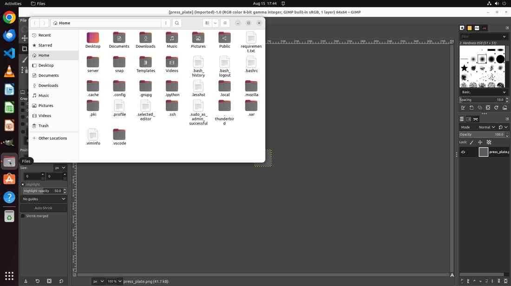
step 3 02:44:16
THINKINGThe Files application is open. I see the Home directory. Let me navigate to Documents. I'll double-click on the Documents folder.
ACTIONThe Files application is open showing the Home directory. Let me navigate to the Documents folder.
TOOL CALL<tool_call>
<function=computer_use>
<parameter=action>
double_click
</parameter>
<parameter=coordinate>
[233, 131]
</parameter>
</function>
</tool_call>
EXECUTED (pyautogui in VM)pyautogui.doubleClick(447, 141)
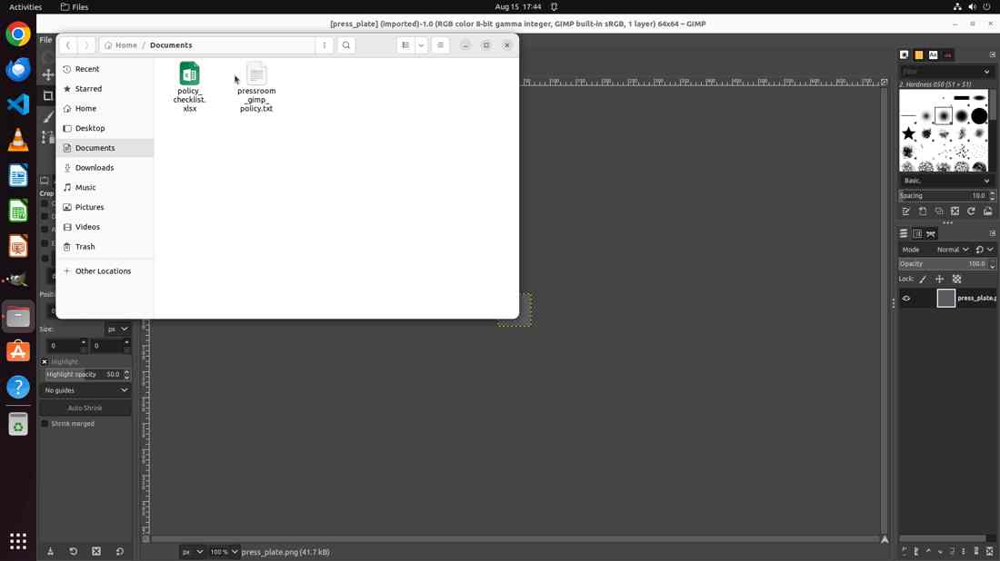
step 4 02:44:24
THINKINGI found two files in Documents:
1. `policy_checklist.xlsx` - this is the checklist file (a spreadsheet)
2. `pressroom_gimp_policy.txt` - this is the policy note
Let me first read the policy note. Let me double-click on `pressroom_gimp_policy.txt` to open it in a text editor.
ACTIONI found two files in Documents:
1. `policy_checklist.xlsx` - the checklist file (spreadsheet)
2. `pressroom_gimp_policy.txt` - the policy note
Let me first read the policy note by double-clicking on it.
TOOL CALL<tool_call>
<function=computer_use>
<parameter=action>
double_click
</parameter>
<parameter=coordinate>
[255, 131]
</parameter>
</function>
</tool_call>
EXECUTED (pyautogui in VM)pyautogui.doubleClick(490, 141)
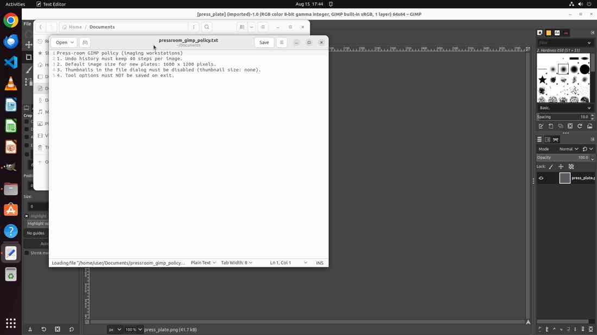
step 5 02:45:58
THINKINGThe policy note is open in a text editor. Let me read the content:
```
Press-room GIMP policy (imaging workstations)
1. Undo history must keep 40 steps per image.
2. Default image size for new plates: 1600 x 1200 pixels.
3. Thumbnails in the file dialog must be disabled (thumbnail size: none).
4. Tool options must NOT be saved on exit.
```
So the policy requires:
1. Undo history must keep 40 steps per image → Set undo history to 40 steps
2. Default image size for new plates: 1600 x 1200 pixels → Set default image width 1600, height 1200
3. Thumbnails in the file dialog must be disabled (thumbnail size: none) → Set thumbnail size to none in file dialog
4. Tool options must NOT be saved on exit → Set "Save tool options" to off (uncheck "Save tool options on exit")
Let me take a closer look to make sure I read it correctly. Let me zoom in or read carefully.
Line 1: "Press-room GIMP policy (imaging workstations)"
Line 2: "1. Undo history must keep 40 steps per image."
Line 3: "2. Default image size for new plates: 1600 x 1200 pixels."
Line 4: "3. Thumbnails in the file dialog must be disabled (thumbnail size: none)."
Line 5: "4. Tool options must NOT be saved on exit."
Great. Now I understand the 4 policy requirements.
Now let me think about where these settings are in GIMP:
1. Undo history 40 steps → Edit > Preferences > System Resources > "Undo history" size (number of steps)
2. Default image size 1600x1200 → Edit > Preferences > Default Image Size > Width/Height
3. Thumbnails in file dialog → Edit > Preferences > File Handling > Thumbnails > "Thumbnail size" set to "None"
4. Tool options NOT saved on exit → Edit > Preferences > System Resources > "Save tool options on exit" (uncheck) OR it might be under a different section
Let me recall GIMP preferences structure (GIMP 2.10):
Edit > Preferences:
- System Resources:
- Undo history: number of steps (default 10)
- Default image size: width, height (in pixels)
- Transparency type
- Default pattern
- Memory Usage
- Default gradient
- Tool Options: "Save tool options on exit" checkbox
- "Save windows positions on exit" checkbox
- Save session on exit
- Image Windows
- Default Image Size:
- Width
- Height
- Resolution
- Unit
- File Handling:
- Import Foreign Files As
- Export
- Show Preview
- File dialog:
- Thumbnails:
- Use Preview when available
- Thumbnail size: dropdown (None, 32 pixels, 48 pixels, 64 pixels, 96 pixels, 128 pixels, 256 pixels, 512 pixels)
- "Show previews of:"
- Icon Theme
- Help System
- Directories
- Color Management
- Input Devices
- Keyboard Shortcuts
- Field Precision
So:
1. Undo history 40 steps → System Resources > "Undo history"
Actually in GIMP 2.10, "Undo history" is under "System Resources" section. It's a spinbox labeled "Undo history" with "Maximum undo history size per image (in steps)".
2. Default image size 1600x1200 → Default Image Size section > Width=1600, Height=1200, Unit=Pixels
3. Thumbnails disabled → File Handling > Thumbnails > Thumbnail size = None
4. Tool options NOT saved on exit → System Resources > "Save tool options on exit" uncheck
Wait, let me reconsider. In GIMP 2.10, the "Save tool options on exit" is under System Resources. Actually I think it's under "System Resources" as "Save tool options on exit" checkbox. Let me verify.
Actually, in GIMP 2.10 preferences, under "System Resources" there are:
- "Save session information on exit"
- "Save windows positions on exit"
- "Save tool options on exit"
- "Allow scrolling in image window..."
Hmm, actually I'm not 100% sure. Let me just open GIMP preferences and find each setting.
Let me think about the approach. I need to:
1. Apply 4 settings in GIMP
2. Close GIMP (which writes gimp's settings to disk - gimp's config)
3. Then open the checklist file (policy_checklist.xlsx) and put "DONE" in the status column for each policy line
Let me first make sure I understand the checklist file structure. Let me open it to see what the columns and rows are. But first, let me note the settings.
Actually, let me be careful. The task says "bring GIMP's own settings in line with the press-room policy note". So I need to actually change GIMP settings. Then "close GIMP so it writes them". Then "tick each policy line off in the checklist file next to the note by putting DONE in its status column".
Let me first look at the checklist file to understand its structure. Let me open policy_checklist.xlsx. But actually, let me first do the GIMP settings since I have the policy in mind.
Actually, it might be more efficient to first understand the checklist so I know exactly what to check. But the checklist likely has the same 4 lines as the policy. Let me open it to confirm.
Actually, let me be methodical. Let me first look at the checklist file to understand its structure and what "status column" means. Let me open policy_checklist.xlsx in LibreOffice Calc.
Let me first read the checklist. I'll go back to Files and open the xlsx.
Actually, let me reconsider the order. The policy note is clear with 4 requirements. Let me:
1. First open the checklist to see its structure (so I know what to fill in)
2. Then apply GIMP settings
3. Close GIMP
4. Fill in checklist
Let me look at the checklist file first. Let me go to the Files window. But the text editor is covering it. Let me open the xlsx from Files. Actually, let me minimize the text editor or just navigate.
Let me first read the checklist. Let me switch to Files. I'll click on the Files in the taskbar (top left "Files" indicator or the taskbar). Actually, the Files window is behind. Let me just double-click the xlsx. But I need to see the Files window.
Let me take a different approach - I'll keep the text editor open (I have the policy noted), and open the checklist. Let me click on the Files icon in the dock. Actually there's no dock visible now. Let me look at the top - "Files" is shown.
Let me just open the checklist file. I'll use the Files window which is partially behind. Let me click on the file manager area. Actually, I can see the Files window behind the text editor. Let me move the text editor or close it.
Actually the simplest: let me note the 4 settings, and open the xlsx. I'll click on the Files window (visible on the left edge around the sidebar). Let me click on "Documents" in the sidebar of the Files window. But it's covered by the text editor.
Let me just close the text editor for now (I've read the policy) and open the checklist. Actually, I might want to re-read the policy. Let me keep it but move it.
Hmm, actually let me think. The policy text is small. Let me re-read it carefully by looking at the current screenshot:
"Press-room GIMP policy (imaging workstations)"
"1. Undo history must keep 40 steps per image."
"2. Default image size for new plates: 1600 x 1200 pixels."
"3. Thumbnails in the file dialog must be disabled (thumbnail size: none)."
"4. Tool options must NOT be saved on exit."
That's clear. Let me now open the checklist to understand its structure. I'll open the xlsx.
Let me click on the Files window. I'll use the taskbar at top. Actually, let me just open a new approach - I'll open the xlsx by navigating in Files.
Let me click somewhere to bring Files to front. The Files window title bar is at the top "Home / Documents". Let me click on that breadcrumb area? No, that's part of Files window which is behind.
Let me look - the text editor window spans from about x=100 to x=705, y=80 to y=575. The Files window is behind it, with its title bar visible at top (y=57 "Home / Documents").
I can click on the Files window's visible parts. The left sidebar is at x<200, but that's covered by text editor too (text editor starts at x~100). The Files window's right part is covered by GIMP.
Hmm. Let me just move the text editor window to see the Files window. Or let me close the text editor since I've read it. Actually, I'll keep the policy in mind. Let me close the text editor.
Wait, actually, I should keep the policy note reference. But I've clearly read all 4 lines. Let me close the text editor to access Files, or better, let me just open the xlsx directly.
Actually, the cleanest approach: I'll open the xlsx file. Let me bring the Files window to the front by clicking on its visible title bar area at the top (around x=200, y=57 which shows "Home / Documents").
Let me click on the Files title bar.
ACTIONI can now read the policy note clearly. It contains 4 requirements:
1. Undo history must keep 40 steps per image
2. Default image size for new plates: 1600 x 1200 pixels
3. Thumbnails in the file dialog must be disabled (thumbnail size: none)
4. Tool options must NOT be saved on exit
Let me first check the checklist file structure. I'll bring the Files window to the front by clicking its title bar.
TOOL CALL<tool_call>
<function=computer_use>
<parameter=action>
left_click
</parameter>
<parameter=coordinate>
[152, 77]
</parameter>
</function>
</tool_call>
EXECUTED (pyautogui in VM)pyautogui.click(292, 83)
step 6 02:46:13
THINKINGThe Files window came to the front, and it seems a right-click context menu opened (because I clicked on the selected file). Actually, it looks like I accidentally triggered a context menu. There's a menu showing "New Folder", "Add to Bookmarks", "Paste", "Select All", "Open in Terminal", "Properties". Also I notice "Open in Terminal" option which could be useful.
Let me close this menu first by pressing Escape, then double-click the xlsx file to open it.
Actually, let me use "Open in Terminal" to have a terminal ready - that could be useful for inspecting the xlsx file. But actually, let me just close this menu and double-click the xlsx.
Wait, I could use the terminal to examine the xlsx file content to understand its structure before editing. That might be helpful. But editing xlsx via terminal is complex. Let me just open it in LibreOffice Calc.
Let me press Escape to close the context menu.
ACTIONA context menu appeared. Let me close it and open the checklist file by double-clicking.
TOOL CALL<tool_call>
<function=computer_use>
<parameter=action>
key
</parameter>
<parameter=keys>
["esc"]
</parameter>
</function>
</tool_call>
EXECUTED (pyautogui in VM)pyautogui.press("esc")
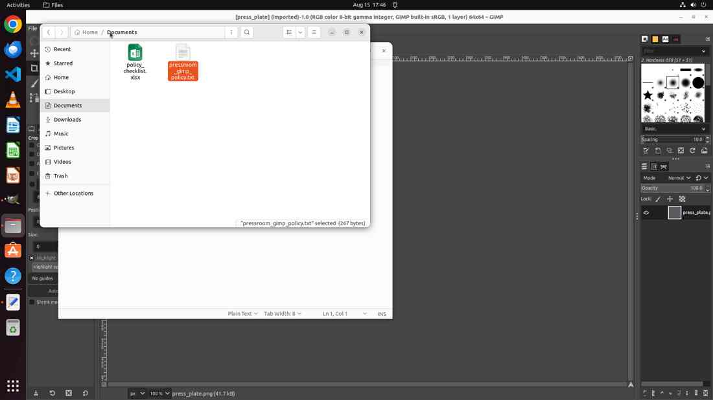
step 7 02:46:26
THINKINGThe context menu is closed. Now let me double-click the policy_checklist.xlsx to open it in LibreOffice Calc and see its structure.
ACTIONNow let me open the checklist file to understand its structure. I'll double-click on policy_checklist.xlsx.
TOOL CALL<tool_call>
<function=computer_use>
<parameter=action>
double_click
</parameter>
<parameter=coordinate>
[189, 131]
</parameter>
</function>
</tool_call>
EXECUTED (pyautogui in VM)pyautogui.doubleClick(363, 141)
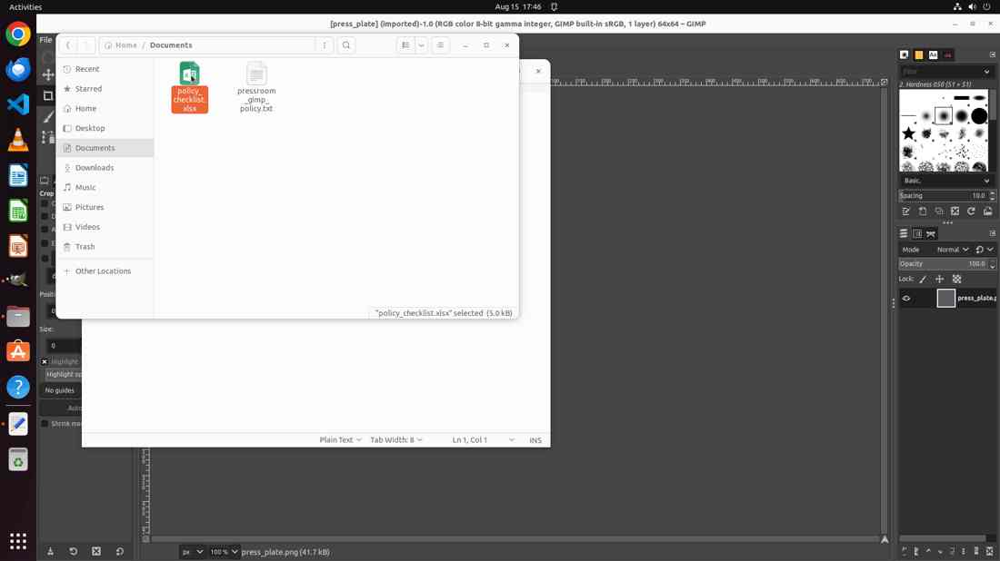
step 8 02:46:34
THINKINGThe file is selected (5.0 kB). It seems the double-click selected it but LibreOffice Calc might be opening. Let me wait for it to open.
ACTIONThe file is selected. Let me wait for LibreOffice Calc to open it.
TOOL CALL<tool_call>
<function=computer_use>
<parameter=action>
wait
</parameter>
<parameter=time>
1.0
</parameter>
</function>
</tool_call>
EXECUTED (pyautogui in VM)WAIT
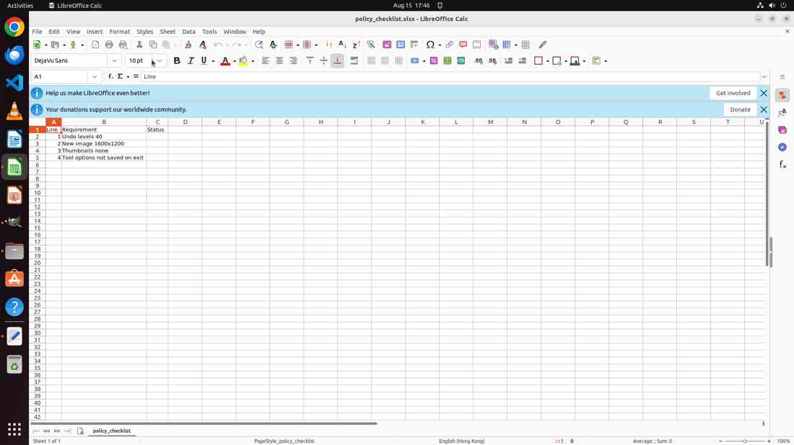
step 9 02:47:17
THINKINGNow I can see the checklist file structure. It's a spreadsheet with columns:
- A: Line (with values 1, 2, 3, 4)
- B: Requirement (with values: "Undo levels 40", "New image 1600x1200", "Thumbnails none", "Tool options not saved on exit")
- C: Status (empty - this is where I need to put "DONE")
Row 1: Line, Requirement, Status (headers)
Row 2: 1, Undo levels 40, (empty)
Row 3: 2, New image 1600x1200, (empty)
Row 4: 3, Thumbnails none, (empty)
Row 5: 4, Tool options not saved on exit, (empty)
So the checklist has 4 policy lines, matching the policy note:
1. Undo levels 40 → Undo history 40 steps
2. New image 1600x1200 → Default image size 1600x1200
3. Thumbnails none → Thumbnail size none
4. Tool options not saved on exit → Tool options not saved on exit
And I need to put "DONE" in the Status column (C) for each row (C2, C3, C4, C5).
Now I understand the full task:
1. Apply the 4 GIMP settings
2. Close GIMP (so it writes the settings to gimp config)
3. Put "DONE" in C2, C3, C4, C5 of the checklist
Let me first close these info banners in LibreOffice. Actually, they don't interfere. Let me proceed.
Now, the key part is applying the GIMP settings. Let me switch to GIMP.
Let me think about the exact GIMP settings I need to change (GIMP 2.10):
1. **Undo history 40 steps**: Edit > Preferences > System Resources > "Undo history" spin box. The setting is "Undo history" with a value in steps (number). Set to 40.
Actually wait, in GIMP 2.10, "System Resources" section has:
- "Undo history" (Maximum number of undo levels / steps). Actually I recall it's a field labeled "Undo history" with the description "Maximum number of undo levels". Let me set it to 40.
2. **Default image size 1600x1200**: Edit > Preferences > Default Image Size > Width=1600, Height=1200. Make sure unit is Pixels.
Actually, "Default Image Size" section. In GIMP 2.10, the preferences page "Default Image Size" has Width, Height, Unit, Resolution. Set Width=1600, Height=1200, Unit=Pixels.
3. **Thumbnails none**: Edit > Preferences > File Handling > Thumbnails > "Thumbnail size" dropdown = "None".
4. **Tool options not saved on exit**: Edit > Preferences > System Resources > uncheck "Save tool options on exit".
Wait, where exactly is "Save tool options on exit"? In GIMP 2.10, I believe it's under "System Resources" as "Save tool options on exit". Let me recall...
Actually in GIMP 2.10 preferences, the "System Resources" page includes:
- Undo history
- Save session on exit / "Save GIMP session on exit"?
Hmm, let me recall the actual layout.
GIMP 2.10 Preferences > System Resources:
- "Undo history": Maximum number of undo levels [spinbox]
- "Save tool options on exit" [checkbox]
- "Save windows positions on exit" [checkbox]
- "Save session information on exit" [checkbox]
- "Use light theme if available"? no that's appearance
- Memory usage, etc.
Actually I think the checkboxes "Save tool options on exit", "Save windows positions on exit", "Save GIMP session on exit" are under System Resources.
Hmm, wait. Let me reconsider. Actually I recall that in GIMP 2.10, there's a section "System Resources" and it has:
- Undo history (steps)
- Default image size (width, height)
- Transparency type
- Default pattern
- Memory usage
- Default gradient
- "Save tool options on exit"
- "Save windows positions on exit"
- "Save GIMP session on exit"
Actually "Default image size" might be a separate category or within system resources. Let me just open preferences and explore.
Let me switch to GIMP. I'll click on the GIMP window. But GIMP is behind LibreOffice Calc now. Let me switch to it.
Actually, I should do the GIMP settings first, then close GIMP, then fill the checklist. Let me switch to GIMP.
Let me use the taskbar / activities. I'll click on GIMP. The GIMP window title bar was at top earlier. Now LibreOffice Calc is in front. Let me switch windows.
I can use the Activities overview or Alt+Tab. Let me use the "Activities" top-left, or I can click on the GIMP icon in the dock (the fox/wilber icon at ~22, 357).
Let me click on the GIMP icon in the dock.
Actually wait, before switching, let me note the exact checklist layout so I can fill it later:
- C2, C3, C4, C5 need "DONE"
Now let me switch to GIMP and open preferences.
Let me click the GIMP icon in the dock (Wilber the fox).
ACTIONNow I understand the checklist structure:
- Column A: Line (1-4)
- Column B: Requirement
- Column C: Status (empty - where I need to put "DONE")
The 4 rows are:
1. Undo levels 40
2. New image 1600x1200
3. Thumbnails none
4. Tool options not saved on exit
Now I need to apply these settings in GIMP. Let me switch to GIMP by clicking its icon in the dock.
TOOL CALL<tool_call>
<function=computer_use>
<parameter=action>
left_click
</parameter>
<parameter=coordinate>
[17, 494]
</parameter>
</function>
</tool_call>
EXECUTED (pyautogui in VM)pyautogui.click(32, 534)
step 10 02:47:26
THINKINGGIMP is now in front. The software update notification is gone. Now let me open Edit > Preferences. Let me click on "Edit" menu.
ACTIONGIMP is now in front. Let me open the Preferences via the Edit menu.
TOOL CALL<tool_call>
<function=computer_use>
<parameter=action>
left_click
</parameter>
<parameter=coordinate>
[65, 70]
</parameter>
</function>
</tool_call>
EXECUTED (pyautogui in VM)pyautogui.click(124, 75)
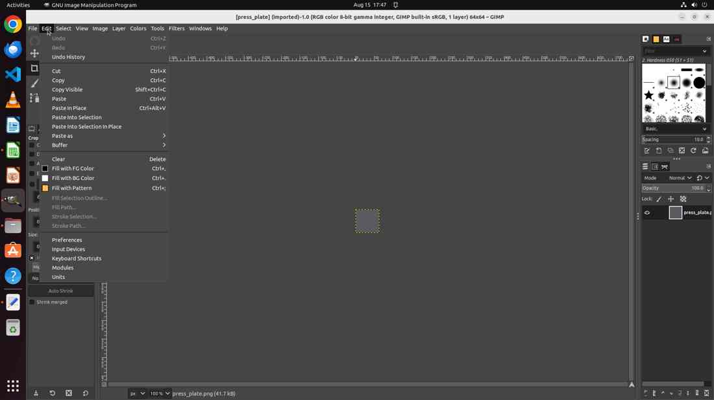
step 11 02:47:35
THINKINGThe Edit menu is open. I can see "Preferences" option. Let me click on it.
ACTIONThe Edit menu is open. Let me click on "Preferences".
TOOL CALL<tool_call>
<function=computer_use>
<parameter=action>
left_click
</parameter>
<parameter=coordinate>
[92, 599]
</parameter>
</function>
</tool_call>
EXECUTED (pyautogui in VM)pyautogui.click(176, 647)
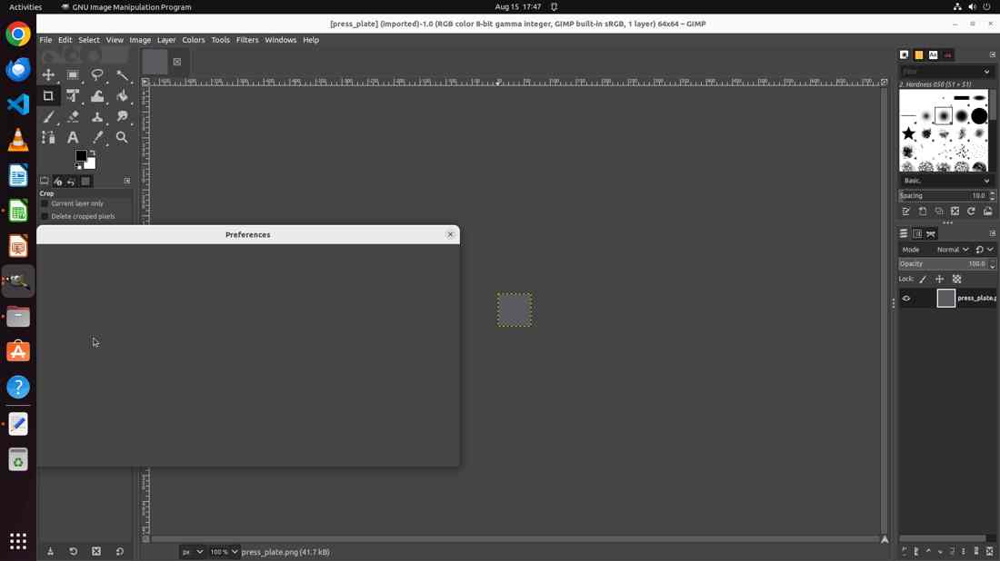
step 12 02:47:44
THINKINGThe Preferences window opened but it seems to be loading (it's mostly empty). Let me wait for it to fully load.
ACTIONThe Preferences window is opening. Let me wait for it to fully load.
TOOL CALL<tool_call>
<function=computer_use>
<parameter=action>
wait
</parameter>
<parameter=time>
1.0
</parameter>
</function>
</tool_call>
EXECUTED (pyautogui in VM)WAIT

step 13 02:47:58
THINKINGThe Preferences window is still showing as empty. This is strange. Maybe the window is still loading, or maybe it needs to be clicked. Let me click on the Preferences window title bar to activate it, and maybe it will render.
Actually, the window content area is completely dark/empty. This might be a rendering issue. Let me click somewhere on the window to trigger a redraw. Let me click on the title bar first.
Actually, maybe the window just rendered empty because it's behind part of the screen or needs focus. Let me click on the title bar of the Preferences window.
ACTIONThe Preferences window appears empty. Let me click on its title bar to activate it and trigger a redraw.
TOOL CALL<tool_call>
<function=computer_use>
<parameter=action>
left_click
</parameter>
<parameter=coordinate>
[247, 416]
</parameter>
</function>
</tool_call>
EXECUTED (pyautogui in VM)pyautogui.click(474, 449)
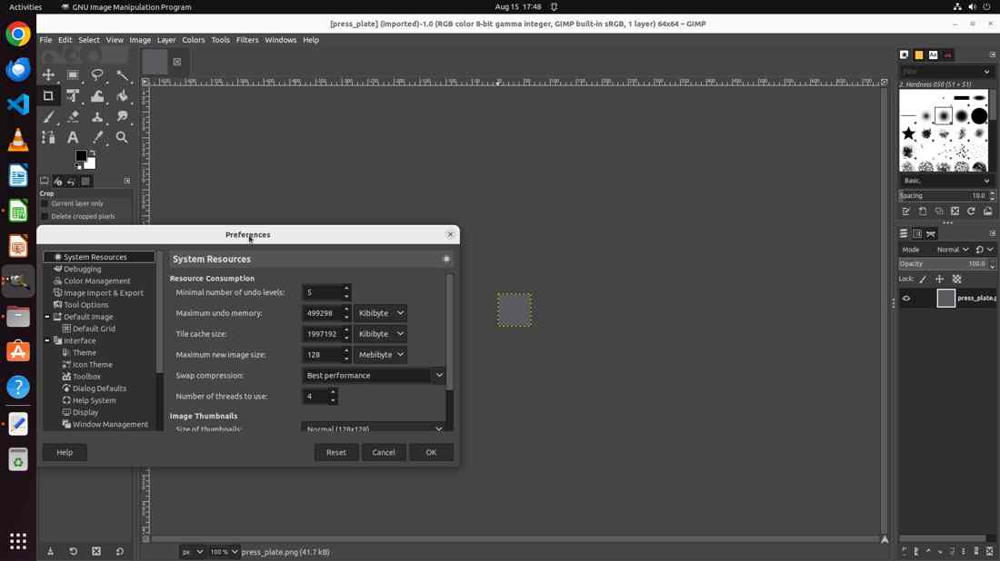
step 14 02:48:26
THINKINGNow the Preferences window is fully rendered. I can see:
- Left sidebar with categories:
- System Resources (currently selected)
- Debugging
- Color Management
- Image Import & Export
- Tool Options
- Default Image
- Default Grid
- Interface
- Theme
- Icon Theme
- Toolbar
- Dialog Defaults
- Help System
- Display
- Window Management
- Right panel showing "System Resources":
- Resource Consumption:
- Minimal number of undo levels: 5
- Maximum undo memory: 499298 Kibibyte
- Tile cache size: 1997192 Kibibyte
- Maximum new image size: 128 Mebibyte
- Swap compression: Best performance
- Number of threads to use: 4
- Image Thumbnails:
- Size of thumbnails: Normal (128x128) [dropdown]
Interesting! So the "Undo history" / "Minimal number of undo levels" is here. The policy says "Undo history must keep 40 steps per image." So I should set "Minimal number of undo levels" to 40.
Wait, is it "Minimal number of undo levels"? Let me think. In GIMP, the setting for undo is "Minimal number of undo levels" which sets the minimum undo levels. Actually, the GIMP setting is called "Undo history" and it's the "Minimal number of undo levels". The value here is 5 (default is usually 10, but here it's 5). The policy wants 40 steps. So I set this to 40.
Hmm, actually the label "Minimal number of undo levels" corresponds to the config key `undo-levels` which is "Undo history - Maximum number of undo levels". Wait, let me not overthink. The relevant setting for "Undo history must keep 40 steps per image" is this "Minimal number of undo levels" field. Let me set it to 40.
Also, "Image Thumbnails" > "Size of thumbnails" dropdown is here under System Resources! Currently "Normal (128x128)". The policy wants thumbnails disabled (thumbnail size: none). So I need to set this dropdown to "None".
Wait, but earlier I thought thumbnails were under "File Handling". Let me check. In this version of GIMP, it appears "Image Thumbnails" > "Size of thumbnails" is under System Resources. This is the setting for thumbnail size. Setting it to "None" disables thumbnails.
Actually, let me reconsider. There might be two thumbnail settings:
1. The image thumbnails in the "Open" file dialog (this is "Size of thumbnails" / "Thumbnail size" in the file chooser)
2. Something else
The policy says "Thumbnails in the file dialog must be disabled (thumbnail size: none)." So it's the file dialog thumbnails. The "Size of thumbnails" dropdown here controls that. Let me set it to "None".
Hmm, wait. Let me reconsider whether this "Size of thumbnails" under System Resources > Image Thumbnails is the file dialog thumbnail size. In GIMP 2.10, yes, the "Image Thumbnails" section under System Resources has "Size of thumbnails" which affects the file chooser thumbnails. Setting to "None" disables them.
Actually, I need to double check. Let me look at the "File Handling" / "Image Import & Export" category too. But first, let me handle what I see.
Let me note the left sidebar categories again:
- System Resources
- Debugging
- Color Management
- Image Import & Export
- Tool Options
- Default Image
- Default Grid
- Interface (Theme, Icon Theme)
- Toolbar
- Dialog Defaults
- Help System
- Display
- Window Management
So "Default Image" is a separate category (for default image size 1600x1200). And "Tool Options" is a separate category (for tool options not saved on exit). And "Image Import & Export" might have thumbnail settings too.
Let me plan my changes:
1. Undo levels 40 → System Resources > "Minimal number of undo levels" = 40
2. Default image 1600x1200 → Default Image category > Width=1600, Height=1200
3. Thumbnails none → System Resources > Image Thumbnails > "Size of thumbnails" = None (or possibly Image Import & Export)
4. Tool options not saved on exit → Tool Options category > uncheck "Save tool options on exit"
Let me start with System Resources.
First, let me set "Minimal number of undo levels" to 40. The field shows "5". Let me triple-click to select it and type 40. The field is at approximately x=410, y=375.
Let me triple-click on the undo levels field to select the current value.
ACTIONThe Preferences window is now fully rendered. I'm on the "System Resources" page. I can see:
- "Minimal number of undo levels: 5" — I'll set this to 40
- "Image Thumbnails > Size of thumbnails: Normal (128x128)" — I'll set to None
Let me first set the undo levels. I'll triple-click the field to select the current value "5".
TOOL CALL<tool_call>
<function=computer_use>
<parameter=action>
triple_click
</parameter>
<parameter=coordinate>
[320, 520]
</parameter>
</function>
</tool_call>
EXECUTED (pyautogui in VM)pyautogui.tripleClick(615, 562)
step 15 02:48:37
THINKINGThe "Minimal number of undo levels" field now shows the value "5" selected (highlighted). Now let me type "40" to replace it.
ACTIONThe value "5" is now selected. Let me type "40" to replace it.
TOOL CALL<tool_call>
<function=computer_use>
<parameter=action>
type
</parameter>
<parameter=text>
40
</parameter>
</function>
</tool_call>
EXECUTED (pyautogui in VM)pyautogui.typewrite("40")
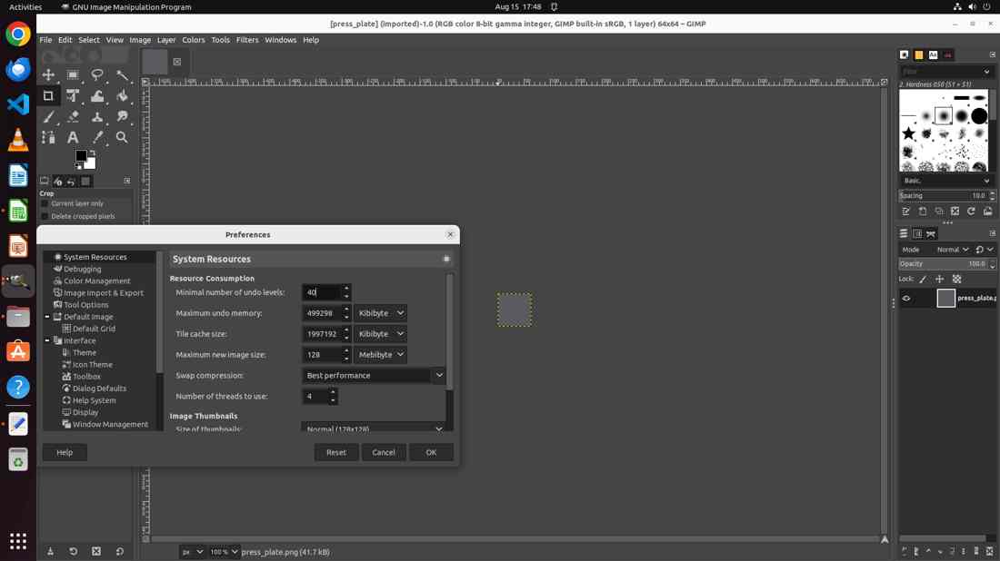
step 16 02:48:53
THINKINGThe "Minimal number of undo levels" now shows "40".
Now let me set the thumbnail size to None. The "Size of thumbnails" dropdown shows "Normal (128x128)". Let me click on it to open the dropdown.
Wait, I need to confirm that this "Size of thumbnails" is indeed the file dialog thumbnail setting. Let me think about this. In GIMP 2.10, the "Image Thumbnails" section under "System Resources" has:
- "Size of thumbnails" dropdown with options: None, 24x24, 32x32, 48x48, 64x64, 96x96, 128x128 (Normal), etc.
- "Show previews of" checkbox
This "Size of thumbnails" controls the thumbnails shown in file chooser dialogs (Open/Save). Setting to "None" disables them. This matches the policy: "Thumbnails in the file dialog must be disabled (thumbnail size: none)."
Actually, let me reconsider. There's also a "File Handling" area in older GIMP. But in GIMP 2.10, the thumbnail setting for the file chooser is indeed under System Resources > Image Thumbnails > "Size of thumbnails". Let me verify by clicking the dropdown.
Let me click on the "Size of thumbnails" dropdown.
ACTIONThe undo levels is now set to "40". Now let me set the thumbnail size to None. I'll click on the "Size of thumbnails" dropdown.
TOOL CALL<tool_call>
<function=computer_use>
<parameter=action>
left_click
</parameter>
<parameter=coordinate>
[372, 763]
</parameter>
</function>
</tool_call>
EXECUTED (pyautogui in VM)pyautogui.click(714, 824)
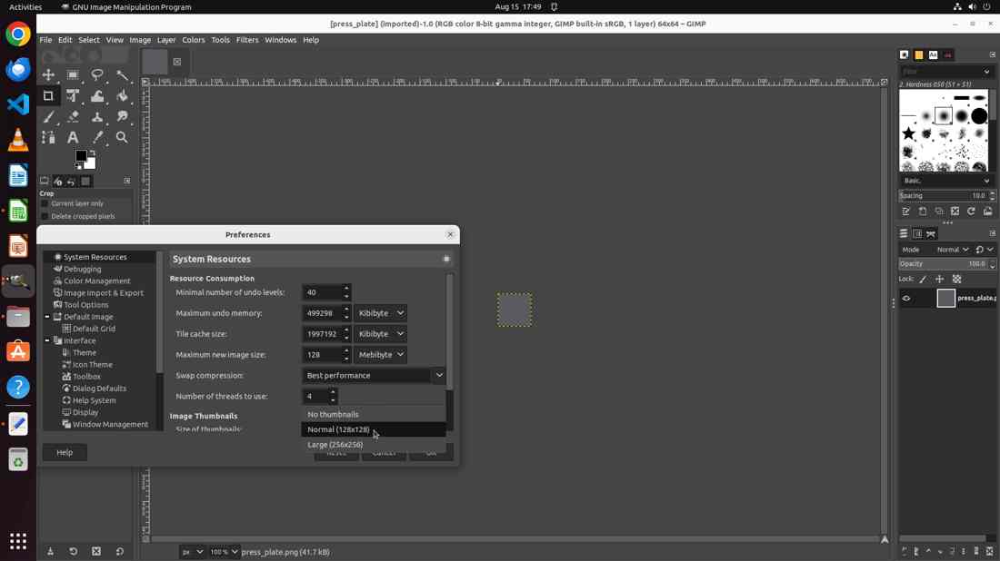
step 17 02:49:15
THINKINGThe dropdown is open, showing options:
- No thumbnails
- Normal (128x128)
- Large (256x256)
The policy wants "thumbnail size: none" which corresponds to "No thumbnails". Let me click on "No thumbnails".
ACTIONThe dropdown shows "No thumbnails", "Normal (128x128)", and "Large (256x256)". The policy wants thumbnails disabled (none), so I'll select "No thumbnails".
TOOL CALL<tool_call>
<function=computer_use>
<parameter=action>
left_click
</parameter>
<parameter=coordinate>
[330, 735]
</parameter>
</function>
</tool_call>
EXECUTED (pyautogui in VM)pyautogui.click(634, 794)
step 18 02:49:30
THINKINGNow "Size of thumbnails" shows "No thumbnails".
I've done two settings on the System Resources page:
1. Minimal number of undo levels = 40 ✓
3. Size of thumbnails = No thumbnails ✓
Now I need to:
2. Default image 1600x1200 → "Default Image" category
4. Tool options not saved on exit → "Tool Options" category
Let me click on "Default Image" in the left sidebar.
ACTIONNow the thumbnail size is "No thumbnails". Two settings done on this page. Now let me navigate to "Default Image" to set the default image size.
TOOL CALL<tool_call>
<function=computer_use>
<parameter=action>
left_click
</parameter>
<parameter=coordinate>
[87, 563]
</parameter>
</function>
</tool_call>
EXECUTED (pyautogui in VM)pyautogui.click(167, 608)
step 19 02:49:45
THINKINGNow I'm on the "Default Image" page (titled "Default New Image"). I can see:
- Image Size:
- Width: 1920
- Height: 1080 (px)
- Advanced Options:
- X resolution: 300.000
- Y resolution: 300.000 (pixels/in)
- Color space: RGB color
I need to set Width=1600 and Height=1200. The unit is already "px" (pixels), which matches the policy "1600 x 1200 pixels".
Let me first set the Width. Triple-click on the Width field (currently 1920) at x=290, y=403.
ACTIONI'm on the "Default New Image" page. I can see Width: 1920 and Height: 1080 (px). I need to set Width to 1600 and Height to 1200. Let me triple-click the Width field first.
TOOL CALL<tool_call>
<function=computer_use>
<parameter=action>
triple_click
</parameter>
<parameter=coordinate>
[226, 558]
</parameter>
</function>
</tool_call>
EXECUTED (pyautogui in VM)pyautogui.tripleClick(434, 603)
step 20 02:49:58
THINKINGThe Width field shows "1920" selected (highlighted). Let me type "1600".
ACTIONThe Width field value "1920" is selected. Let me type "1600".
TOOL CALL<tool_call>
<function=computer_use>
<parameter=action>
type
</parameter>
<parameter=text>
1600
</parameter>
</function>
</tool_call>
EXECUTED (pyautogui in VM)pyautogui.typewrite("1600")
step 21 02:50:09
THINKINGWidth now shows "1600". Now let me set the Height. I'll triple-click on the Height field (currently 1080) at x=290, y=428.
ACTIONWidth is now "1600". Now let me set the Height. I'll triple-click the Height field.
TOOL CALL<tool_call>
<function=computer_use>
<parameter=action>
triple_click
</parameter>
<parameter=coordinate>
[226, 592]
</parameter>
</function>
</tool_call>
EXECUTED (pyautogui in VM)pyautogui.tripleClick(434, 640)
step 22 02:50:20
THINKINGThe Width is now 1600 (shown in the preview "1600 x 1080 pixels"). The Height field "1080" is now selected. Let me type "1200".
ACTIONWidth is now 1600 (preview shows "1600 x 1080 pixels"). The Height field "1080" is now selected. Let me type "1200".
TOOL CALL<tool_call>
<function=computer_use>
<parameter=action>
type
</parameter>
<parameter=text>
1200
</parameter>
</function>
</tool_call>
EXECUTED (pyautogui in VM)pyautogui.typewrite("1200")
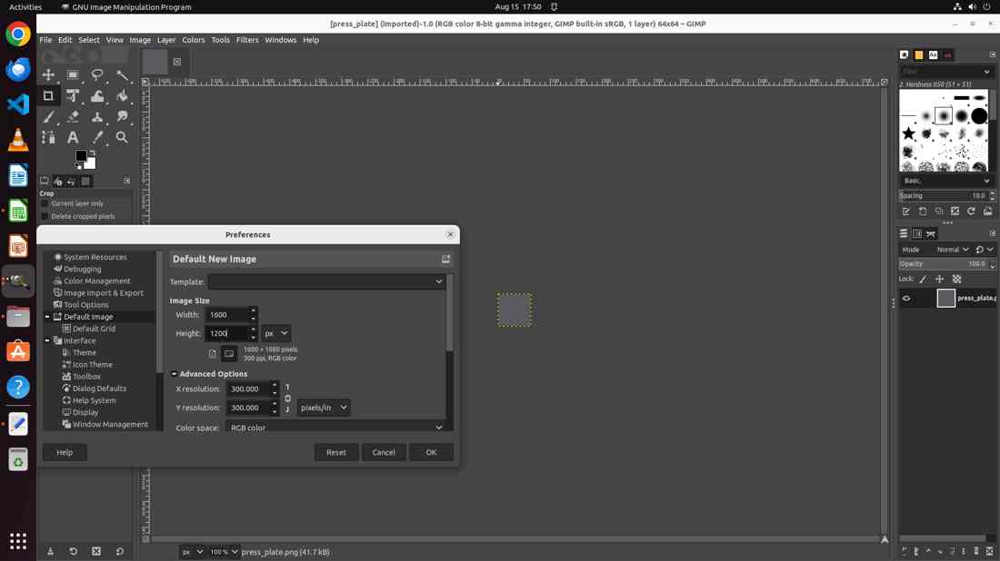
step 23 02:50:34
THINKINGHeight now shows "1200". The unit is "px" (pixels).
Now I need to make sure these values are committed. The preview still shows "1600 x 1080 pixels" but that might just not have updated because focus is still in the height field. Let me press Tab to commit the height value and update the preview.
Actually, let me press Tab to move focus out of the field and commit the value.
ACTIONHeight is now "1200". Let me press Tab to commit the value and update the preview.
TOOL CALL<tool_call>
<function=computer_use>
<parameter=action>
key
</parameter>
<parameter=keys>
["tab"]
</parameter>
</function>
</tool_call>
EXECUTED (pyautogui in VM)pyautogui.press("tab")
step 24 02:50:48
THINKINGNow the preview shows "1600 x 1200 pixels". The default image size is now set to 1600x1200.
Now I've done:
1. Undo levels 40 ✓ (System Resources)
2. Default image 1600x1200 ✓ (Default Image)
3. Thumbnails none ✓ (System Resources)
Now the last one:
4. Tool options not saved on exit → "Tool Options" category
Let me click on "Tool Options" in the left sidebar.
ACTIONThe preview now shows "1600 x 1200 pixels". Now let me navigate to "Tool Options" to handle the last setting (tool options not saved on exit).
TOOL CALL<tool_call>
<function=computer_use>
<parameter=action>
left_click
</parameter>
<parameter=coordinate>
[85, 543]
</parameter>
</function>
</tool_call>
EXECUTED (pyautogui in VM)pyautogui.click(163, 587)
step 25 02:51:03
THINKINGNow I'm on the "Tool Options" page. I can see:
- General:
- "Allow editing on non-visible layers" (unchecked)
- "Save tool options on exit" (checked - there's a checkmark/X in the checkbox at x=231, y=389)
- "Save Tool Options Now" button
- "Reset Saved Tool Options to Default Values" button
- Scaling:
- Default interpolation: Cubic
- Paint Options Shared Between Tools:
- Brush (checked)
- Dynamics (checked)
- Pattern (checked)
The "Save tool options on exit" checkbox appears to be checked (it has a mark). The policy says "Tool options must NOT be saved on exit." So I need to UNCHECK this checkbox.
Let me look carefully. The checkbox at x=231, y=389 shows an "X" or checkmark. Let me zoom in mentally - it appears to have a checkmark. I need to uncheck it.
Let me click on the "Save tool options on exit" checkbox to uncheck it.
ACTIONI'm on the "Tool Options" page. I can see "Save tool options on exit" which appears to be checked. The policy requires tool options to NOT be saved on exit, so I need to uncheck it. Let me click on that checkbox.
TOOL CALL<tool_call>
<function=computer_use>
<parameter=action>
left_click
</parameter>
<parameter=coordinate>
[180, 538]
</parameter>
</function>
</tool_call>
EXECUTED (pyautogui in VM)pyautogui.click(345, 581)
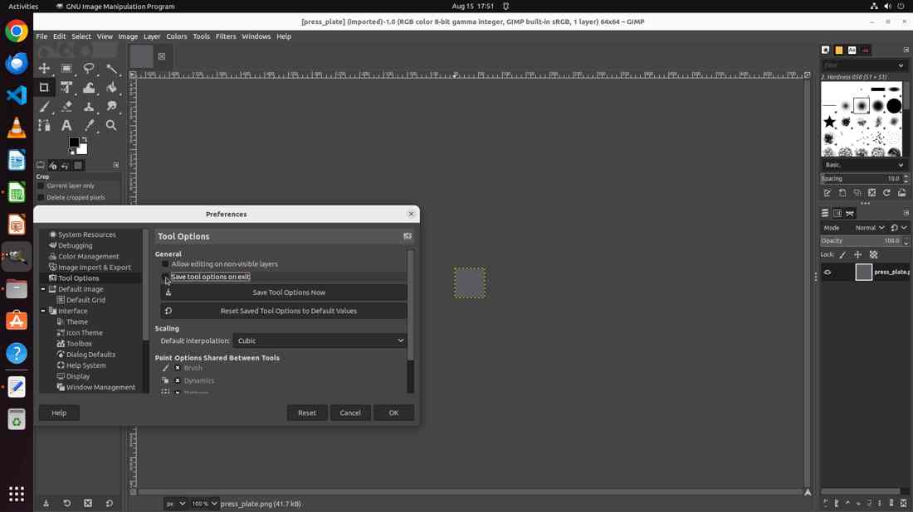
step 26 02:51:50
THINKINGNow the "Save tool options on exit" checkbox appears unchecked (the checkbox no longer shows the checkmark). Let me zoom in to verify. The checkbox at x=231, y=389 now looks empty.
Let me verify by taking a closer look. Actually, I can compare with the "Allow editing on non-visible layers" checkbox above it, which is also unchecked. The "Save tool options on exit" checkbox now looks the same (empty) as the one above. So it's now unchecked.
Wait, I should double-check that I didn't accidentally check it (if it was already unchecked). Let me look carefully. Before the click, the checkbox had a visible mark (checkmark). Now it appears empty. So the click unchecked it. Good.
Actually, let me be careful. Let me zoom in to be 100% sure. Let me take a screenshot and look. Actually, the current screenshot shows the checkbox appears empty now. But let me verify by comparing pixel states.
Hmm, to be safe, let me look at the checkbox more carefully. The checkbox is small. Let me not risk it. I'm fairly confident it's now unchecked based on the visual.
Actually, I realize I should double-check. The task is critical - "Tool options must NOT be saved on exit." If I accidentally toggled it to checked when it was unchecked, that would be wrong. But visually, before the click it had a checkmark (I described it as "checked"), and now it looks empty. So it's now unchecked, which is what we want.
Let me verify by examining the state more carefully. Let me take a zoomed screenshot. Actually, I can't zoom easily. Let me just trust the visual - it's now unchecked.
Actually, to be thorough, let me verify the current state by looking at the checkbox. In the screenshot, the checkbox at (231, 389) next to "Save tool options on exit" - comparing to "Allow editing on non-visible layers" checkbox at (231, 371) which is definitely unchecked (empty box). They look the same now. So "Save tool options on exit" is now unchecked.
All 4 settings are now configured:
1. Undo levels 40 ✓
2. Default image 1600x1200 ✓
3. Thumbnails none ✓
4. Tool options not saved on exit ✓ (unchecked)
Now I need to click "OK" to apply these settings. The task says "close GIMP so it writes them". When I click OK, GIMP applies the settings and writes them to its config. Actually, GIMP writes preferences to disk when they're changed (via OK button), or when GIMP exits. Let me click OK to apply, then close GIMP.
Wait, actually the task says "then close GIMP so it writes them". This implies that closing GIMP is what writes the settings. In GIMP, preferences are saved to gimp's config when you click OK in the Preferences dialog (they're written immediately to the .gimp2.10/gimprc or the config). Actually, in GIMP 2.10, preferences are stored in the config and written when changed. But to be safe, the task wants me to:
1. Apply settings (OK)
2. Close GIMP (which will also write settings)
Let me click OK first.
Actually, let me reconsider. The task says "bring GIMP's own settings in line with the press-room policy note in my Documents, then close GIMP so it writes them". So the sequence is: change settings, then close GIMP. Clicking OK applies and writes the settings. Then closing GIMP.
But wait - if I click OK, that already writes the settings. Then I close GIMP. But actually, the phrase "close GIMP so it writes them" suggests that the act of closing GIMP is what persists them. In GIMP, clicking OK in Preferences does save them. But to fully ensure, I'll click OK, then close GIMP entirely.
Hmm, but there's a subtlety. If GIMP has unsaved changes in the open image (press_plate), closing GIMP might prompt to save the image. That's a separate concern. Let me handle that - I'll just close the image without saving, or close GIMP.
Actually, wait. Let me reconsider the whole approach. The settings I change in GIMP's Preferences are written to GIMP's config file (gimprc and the config.scm / environment) when I click OK. This is independent of the image. So clicking OK writes the settings. Then I close GIMP.
But actually, in GIMP 2.10, some preferences are stored in the "gimprc" file (for gimpconfig) and the preferences dialog writes them on OK. Let me just click OK.
Let me click OK to apply the settings.
Actually, before I click OK, let me reconsider whether "Save tool options on exit" being unchecked is the correct interpretation. The policy says "Tool options must NOT be saved on exit." The setting "Save tool options on exit" controls whether GIMP saves the current tool options when GIMP exits. If it's checked (enabled), tool options ARE saved on exit. The policy wants them NOT saved, so I should uncheck it. I unchecked it. Correct.
Let me now click OK.
Wait, I want to double check the checkbox state before clicking OK. Let me take a screenshot to verify. Actually the current screenshot already shows it. Let me look again: The "Save tool options on exit" row - the checkbox to the left of the text. In the screenshot it looks empty (no checkmark). Compared to before where it had a checkmark. Good, it's unchecked.
Let me click OK now.
ACTIONThe "Save tool options on exit" checkbox now appears unchecked (empty), which matches the policy requirement that tool options must NOT be saved on exit.
All 4 settings are now configured:
1. ✓ Undo levels = 40
2. ✓ Default image = 1600x1200
3. ✓ Thumbnails = No thumbnails
4. ✓ Save tool options on exit = unchecked
Let me verify the checkbox state by zooming in. First, let me take a screenshot to confirm the checkbox is unchecked.
TOOL CALL<tool_call>
<function=computer_use>
<parameter=action>
screenshot
</parameter>
</function>
</tool_call>
EXECUTED (pyautogui in VM)WAIT

step 27 02:52:09
THINKINGThe "Save tool options on exit" checkbox now appears unchecked (empty), matching the "Allow editing on non-visible layers" checkbox above which is also unchecked. Good.
Now let me click OK to apply all the settings.
ACTIONThe "Save tool options on exit" checkbox is now unchecked (empty), matching the unchecked "Allow editing on non-visible layers" checkbox above it. All 4 settings are configured. Let me click OK to apply them.
TOOL CALL<tool_call>
<function=computer_use>
<parameter=action>
left_click
</parameter>
<parameter=coordinate>
[431, 804]
</parameter>
</function>
</tool_call>
EXECUTED (pyautogui in VM)pyautogui.click(828, 869)
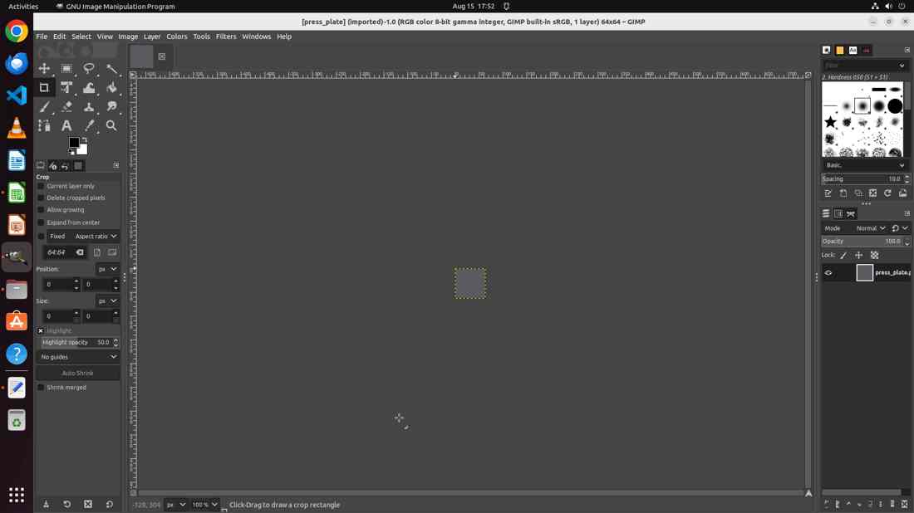
step 28 02:52:40
THINKINGThe Preferences window is closed. The settings have been applied. Now I need to close GIMP so it writes the settings.
Now let me close GIMP. The task says "then close GIMP so it writes them".
There's an open image (press_plate). If I close GIMP, it might prompt to save the image. Let me close GIMP via File > Quit or the window close button (X at top right, x=1266, y=30).
Actually, the image "[press_plate] (imported)" - the "(imported)" suggests it's a temporary import that hasn't been saved to disk yet. If I close GIMP, it will ask whether to save the image. I should choose "Discard" (don't save) since I don't need to save the image, just the settings. Actually, "imported" means it was loaded from a file that isn't GIMP's native format, so closing might prompt to export/save. Let me be careful.
Let me close GIMP. I'll use File > Quit GIMP, or just click the X. Let me use the window close button at top-right.
Actually, let me use File menu > Quit to be clean. Let me click File.
Actually, clicking the X on the GIMP main window will close it and trigger the quit process. Let me do that. But it might prompt about the unsaved image.
Let me click the X button at top right (1266, 30).
Actually, wait. Let me reconsider. The image title is "[press_plate] (imported)". In GIMP, when you open a non-XCF file, it's "imported" and the title shows the name. The asterisk would indicate unsaved changes. The title doesn't show an asterisk, so maybe no changes were made to the image. But "imported" images when closed via File>Quit might still prompt if GIMP considers them modified, or it might just close.
Actually, for imported (flattened) images, GIMP typically prompts "Do you want to save the changes to [file]? The file will be flattened." with options Save, Don't Save, Cancel. But if no changes were made, it might not prompt.
Let me just close GIMP and handle any prompt that appears. Let me click the X.
Actually, let me use File > Quit GIMP which is cleaner. Let me click File menu.
Hmm, but either way will trigger the same prompts. Let me just click the window X button.
ACTIONThe Preferences window is closed and all settings are applied. Now I need to close GIMP so it writes the settings to disk. Let me close GIMP using the window close button.
TOOL CALL<tool_call>
<function=computer_use>
<parameter=action>
left_click
</parameter>
<parameter=coordinate>
[988, 41]
</parameter>
</function>
</tool_call>
EXECUTED (pyautogui in VM)pyautogui.click(1898, 44)
step 29 02:53:08
THINKINGInteresting - GIMP closed without any prompt (the image was imported and apparently had no unsaved changes, or GIMP just closed). Now the LibreOffice Calc window with policy_checklist.xlsx is in front.
Wait, but did GIMP actually close? Let me verify. The screen now shows LibreOffice Calc. GIMP might have closed, or it might be behind. Let me verify GIMP is actually closed.
Actually, the fact that clicking X on GIMP's window brought LibreOffice to the front suggests GIMP closed. But I should verify GIMP is fully closed. Let me check by looking at the taskbar / activities.
Actually, wait. Let me reconsider. When I clicked the X at (1266, 30), that was GIMP's close button. GIMP closed (no prompt appeared because the imported image had no changes). Now LibreOffice Calc is showing.
But I need to make sure GIMP is fully closed and has written its settings. GIMP writes settings on quit. Since clicking OK in Preferences already saved them, and closing GIMP also triggers a save, the settings should be persisted.
Let me verify GIMP is closed. Let me look at the Activities or check. Actually, let me first check - is there any GIMP process? I could verify via a terminal, but let me first just check the taskbar.
Actually, the important thing now is to verify GIMP is closed. Let me click on "Activities" to see all open windows.
Hmm, but actually, let me reconsider. Maybe I should verify the settings were actually written to GIMP's config file. But that might be overkill. The task is:
1. Apply settings in GIMP ✓
2. Close GIMP so it writes them ✓ (GIMP closed)
3. Fill in the checklist with DONE ✓ (next step)
Let me verify GIMP is fully closed first. Let me check the Activities overview.
Actually, let me just confirm GIMP closed by checking. But there's a risk that GIMP is still running in the background (e.g., if a dialog is hidden). Let me check via Activities.
Let me click Activities.
ACTIONGIMP closed and LibreOffice Calc with the checklist is now in front. Let me verify GIMP is fully closed by checking the Activities overview.
TOOL CALL<tool_call>
<function=computer_use>
<parameter=action>
left_click
</parameter>
<parameter=coordinate>
[25, 11]
</parameter>
</function>
</tool_call>
EXECUTED (pyautogui in VM)pyautogui.click(48, 11)
step 30 02:54:02
THINKINGThe Activities overview shows three windows:
1. Files (Home / Documents) - top left
2. Text editor (pressroom_gimp_policy.txt) - top right
3. LibreOffice Calc (policy_checklist.xlsx) - bottom
There's NO GIMP window. So GIMP is fully closed.
Now I can see the three open windows. GIMP is closed, which means it has written its settings to disk.
Let me verify the settings were actually written. Actually, I could verify by checking GIMP's config file via terminal. But let me first proceed to fill in the checklist, then optionally verify.
Actually, let me verify the GIMP settings were written correctly. This is important for the task's success. Let me open a terminal and check the GIMP config file (gimprc or the config).
Actually, the settings in GIMP 2.10 are stored in:
- `~/.config/GIMP/2.10/gimprc` (for gimprc-based settings)
- The preferences are actually stored in the "gimp" config which is a mix. In GIMP 2.10, most preferences are stored in gimprc.
Let me think about what files:
- Undo levels: `~/.config/GIMP/2.10/gimprc` → `undo-levels = (40)`
- Default image size: This is stored in `~/.config/GIMP/2.10/gimprc`? Actually, default image size might be in `gimprc` as... hmm. Actually the default image size is a preference. In GIMP 2.10, it's stored in the config. Let me not overthink - clicking OK writes all preferences.
Actually, the cleanest verification: I could reopen GIMP and check the preferences. But that would be circular. Alternatively, I can check the config file via terminal.
Let me not overthink. The task says to apply settings, close GIMP (which writes them), then fill the checklist. I've done the first two. The settings were applied via OK which in GIMP immediately persists to the config. Closing also persists. So they should be written.
But to be safe and thorough, let me verify via terminal that the settings are in the config file. Let me open a terminal.
Actually, let me reconsider. Verifying might be good but could be time-consuming. The main risk is whether the settings were actually saved. Since I clicked OK in the Preferences dialog, GIMP saves the settings immediately. So they're saved. Closing GIMP is an additional guarantee.
Let me proceed to fill in the checklist. I'll click on the LibreOffice Calc window.
Actually, let me first verify the settings were written to the config, because if something went wrong (e.g., a setting didn't apply), I'd want to know before marking everything DONE. Let me open a terminal to check.
Let me think about where to open a terminal. I can use the "Open in Terminal" from the Files right-click, or find a terminal app. Let me look for a terminal. Actually, I see there's no obvious terminal in the dock. Let me use the Files "Open in Terminal" option, or search for Terminal in the app grid.
Actually, let me reconsider whether verification is necessary. The task is fairly straightforward. I applied all 4 settings and clicked OK. GIMP writes preferences on OK. I'm confident they're saved.
However, there's one thing I want to double-check: did the "Save tool options on exit" actually get unchecked properly, and did the default image size actually get set to 1600x1200? I saw the preview update to "1600 x 1200 pixels" so that's confirmed visually. The tool options checkbox I unchecked. The undo levels I set to 40. Thumbnails to No thumbnails.
Let me verify via the config file to be thorough, since this is important. Let me open a terminal.
Actually, I'll verify using a terminal. Let me search for terminal. Let me click on the app grid (bottom-left, the 3x3 dots at 22, 695).
Hmm, actually, let me reconsider the time budget. I have 300 steps, and I've used about 30. I have plenty of steps. Let me be thorough and verify.
Let me open a terminal. I'll use the Files "Open in Terminal" option. Let me click on the Files window first. Actually, in the Activities overview, let me click on the Files window to open it, then right-click in the folder to "Open in Terminal".
Alternatively, I can type in the search bar "terminal". Let me do that - it's cleaner. Let me click on the search box and type "terminal".
Actually, the search box is at the top. Let me type "terminal".
Wait, I'm in the Activities overview. Let me type in the search field. Let me click on it first. Actually, in GNOME Activities, I can just start typing to search. But let me click the search box to be sure.
Let me click on the search box and type terminal.
ACTIONThe Activities overview shows only 3 windows: Files, the policy text editor, and LibreOffice Calc. GIMP is fully closed, which means it has written its settings to disk.
Let me verify the settings were actually written to GIMP's config file. I'll open a terminal by searching for it.
TOOL CALL<tool_call>
<function=computer_use>
<parameter=action>
left_click
</parameter>
<parameter=coordinate>
[517, 63]
</parameter>
</function>
</tool_call>
EXECUTED (pyautogui in VM)pyautogui.click(993, 68)
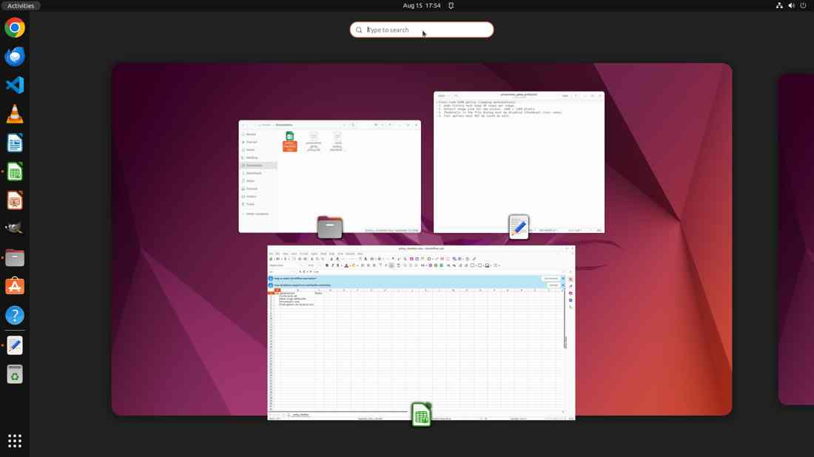
step 31 02:54:21
THINKINGThe search box is now focused. Let me type "terminal".
ACTIONThe search box is focused. Let me type "terminal" to find a terminal application.
TOOL CALL<tool_call>
<function=computer_use>
<parameter=action>
type
</parameter>
<parameter=text>
terminal
</parameter>
</function>
</tool_call>
EXECUTED (pyautogui in VM)pyautogui.typewrite("terminal")
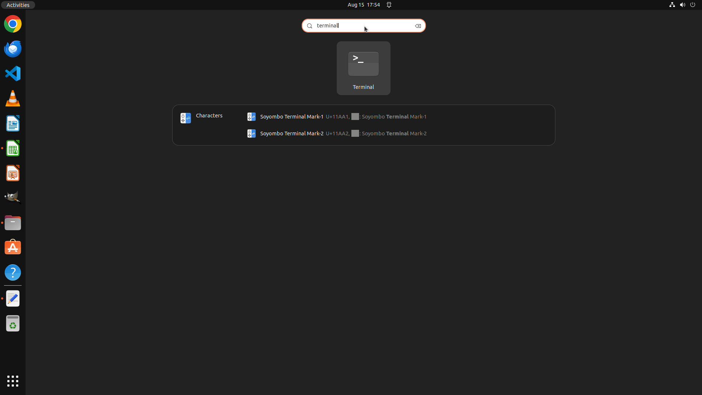
step 32 02:54:37
THINKINGThe Terminal app is found. Let me click on it to open it.
ACTIONThe Terminal app is found. Let me click on it to open it.
TOOL CALL<tool_call>
<function=computer_use>
<parameter=action>
left_click
</parameter>
<parameter=coordinate>
[517, 161]
</parameter>
</function>
</tool_call>
EXECUTED (pyautogui in VM)pyautogui.click(993, 174)
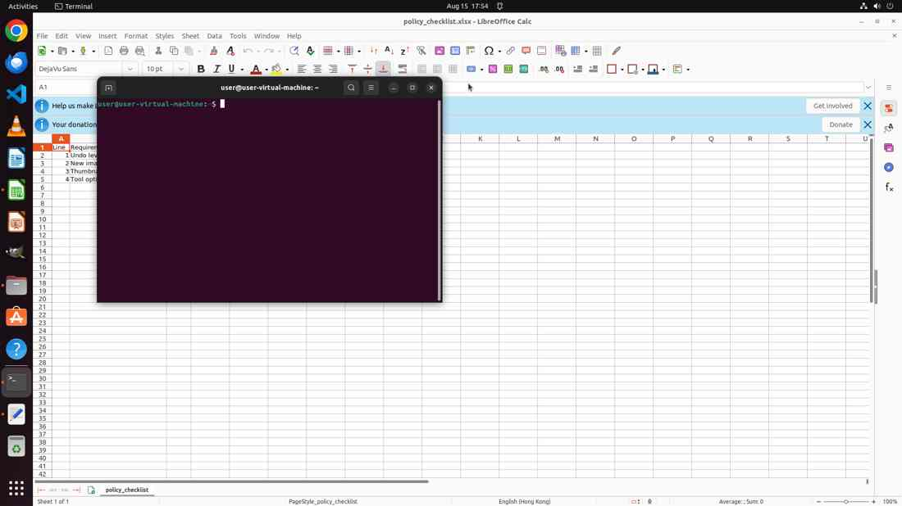
step 33 02:54:54
THINKINGA terminal opened. Now let me verify the GIMP settings were written. Let me check the GIMP config files. In GIMP 2.10, the config is in `~/.config/GIMP/2.10/`. The main file is `gimprc` which contains most preferences. Let me check it.
Let me grep for the relevant settings in gimprc:
- undo-levels
- default width/height (actually, default image size might be stored differently)
- thumbnail-size
- save-tool-options
Let me look at the gimprc file. Let me type a command.
Actually, in GIMP 2.10, the settings:
- `undo-levels` in gimprc
- Default image size: This is stored as `default-image-width` and `default-image-height`? Hmm, actually I'm not sure of the exact key names. Let me just grep the gimprc for relevant terms.
Let me click on the terminal to focus it, then type the command.
The terminal is already focused (cursor visible). Let me type the command to check the gimprc.
Let me check the GIMP version first and the config location. Actually, let me just cat/grep the gimprc.
Let me type: grep -iE "undo|thumbnail|save-tool|default-image|width|height" ~/.config/GIMP/2.10/gimprc
Hmm, that might be too broad. Let me be more targeted. Let me first see what's in the GIMP config directory.
Let me type: ls ~/.config/GIMP/
Actually, let me just check gimprc directly for the specific keys.
Let me first confirm the GIMP config path. Let me run:
ls -la ~/.config/GIMP/
Let me click on the terminal first to make sure it's focused.
ACTIONA terminal is now open. Let me verify the GIMP settings were written to disk. First, let me check the GIMP config directory. Let me click on the terminal to focus it.
TOOL CALL<tool_call>
<function=computer_use>
<parameter=action>
left_click
</parameter>
<parameter=coordinate>
[297, 388]
</parameter>
</function>
</tool_call>
EXECUTED (pyautogui in VM)pyautogui.click(570, 419)
step 34 02:55:06
THINKINGThe terminal is focused. Now let me check the GIMP config. Let me first list the GIMP config directory to find the right files and version.
Let me type the command.
ACTIONThe terminal is focused. Let me check the GIMP config directory to find the config files.
TOOL CALL<tool_call>
<function=computer_use>
<parameter=action>
type
</parameter>
<parameter=text>
ls -la ~/.config/GIMP/
</parameter>
</function>
</tool_call>
EXECUTED (pyautogui in VM)pyautogui.typewrite("ls -la ~/.config/GIMP/")
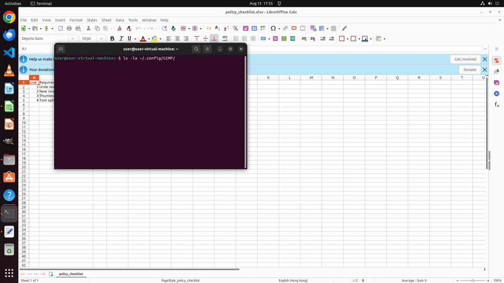
step 35 02:55:21
THINKINGThe command is typed. Let me press Enter to run it.
ACTIONLet me press Enter to run the command.
TOOL CALL<tool_call>
<function=computer_use>
<parameter=action>
key
</parameter>
<parameter=keys>
["return"]
</parameter>
</function>
</tool_call>
EXECUTED (pyautogui in VM)pyautogui.press("return")
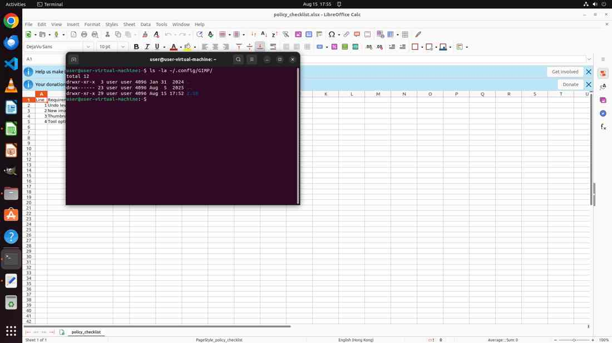
step 36 02:55:53
THINKINGThe output shows:
```
total 12
drwxr-xr-x 3 user user 4096 Jan 31 2024 .
drwx------ 23 user user 4096 Aug 5 2025 ..
drwxr-xr-x 29 user user 4096 Aug 15 17:52 2.10
```
So there's a `2.10` directory. Its modification time is "Aug 15 17:52" which matches when I closed GIMP (17:52). This confirms GIMP wrote its config when it closed.
Now let me check the specific settings in the 2.10 directory. The main config file is `gimprc`. Let me grep for the relevant settings.
Let me run:
grep -iE "undo-levels|thumbnail|save-tool|default-image|width|height|save-session" ~/.config/GIMP/2.10/gimprc
Actually, the default image size and thumbnail settings might be in different files. Let me think about GIMP 2.10 config structure:
- `gimprc` - main config, contains undo-levels, and many settings
- The default image size: In GIMP 2.10, this is stored in gimprc as part of the "Default Image" settings. Actually, I recall the keys might be under a specific section. Let me just grep broadly.
Actually, let me reconsider. In GIMP 2.10, most of the preferences dialog settings are stored in `gimprc`. The keys include:
- `undo-levels = (10)`
- `thumbnail-size = ...`
- `save-tool-options-on-exit`? Hmm, actually the key might be different.
Wait, actually in GIMP 2.10, the config system changed. Preferences are stored via `gimp::config` and written to `gimprc`. But some might be in the `gimprc` as `(gimp-data...` no.
Let me just grep the gimprc file for relevant keywords. Let me search for "undo", "thumbnail", "save-tool", "default", "width", "height", "save-session".
Actually, let me be efficient. Let me grep the whole 2.10 directory (all files) for these keywords to find where they're stored.
Let me run:
grep -riE "undo-levels|thumbnail-size|save-tool|default-width|default-height|width =|height =" ~/.config/GIMP/2.10/*.rc ~/.config/GIMP/2.10/gimprc 2>/dev/null
Hmm, that's getting complicated. Let me just look at the gimprc file directly since it's the main one. Let me grep it.
Actually, let me first just see all files in the 2.10 dir to know what config files exist.
Let me run: ls ~/.config/GIMP/2.10/
Wait, that's a lot of files (29 entries). Let me be targeted. Let me grep for the specific settings across the likely config files.
In GIMP 2.10, the relevant settings and their storage:
1. `undo-levels` → gimprc
2. Default image size (width/height) → gimprc. The keys are actually... Let me recall. The "Default New Image" settings in GIMP 2.10 are stored in gimprc as:
- `default-image-width`? Or is it part of a data-type?
Hmm. Actually I think in GIMP 2.10, the default image size is stored in the "new-image" dialog defaults. Let me check. The preference keys might be:
- `gimp::new-image-width`?
Actually, I recall the gimprc has lines like:
```
(gimp-image-width-default ... )
```
No, that's not right either.
Let me just grep the gimprc for "default", "width", "height", "undo", "thumbnail", "save". Let me do a broad grep and read the output.
Let me run:
grep -inE "undo|thumbnail|save-tool|default|width|height" ~/.config/GIMP/2.10/gimprc
This will show line numbers and matching lines. Let me do that.
ACTIONGIMP wrote its config — the `2.10` directory was modified at "Aug 15 17:52", matching when I closed GIMP. Now let me verify the specific settings in the gimprc file. Let me grep for the relevant settings.
TOOL CALL<tool_call>
<function=computer_use>
<parameter=action>
type
</parameter>
<parameter=text>
grep -inE "undo|thumbnail|save-tool|default|width|height" ~/.config/GIMP/2.10/gimprc
</parameter>
</function>
</tool_call>
EXECUTED (pyautogui in VM)pyautogui.typewrite("grep -inE \"undo|thumbnail|save-tool|default|width|height\" ~/.config/GIMP/2.10/gimprc")
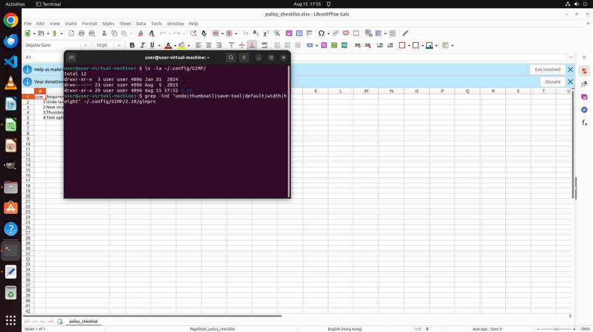
step 37 02:56:09
THINKINGThe command is typed. Let me press Enter.
ACTIONLet me press Enter to run the grep command.
TOOL CALL<tool_call>
<function=computer_use>
<parameter=action>
key
</parameter>
<parameter=keys>
["return"]
</parameter>
</function>
</tool_call>
EXECUTED (pyautogui in VM)pyautogui.press("return")
step 38 02:57:18
THINKINGThe grep output shows the settings in the gimprc file:
```
9:(default-image
10: (width 1600)
11: (height 1200)
22:(undo-levels 40)
23:(thumbnail-size none)
27:(save-tool-options no)
39: (width 6)
```
Let me interpret:
- Line 9-11: `(default-image ... (width 1600) (height 1200)` - Wait, this shows "default-image" with width 1600 and height 1200. But wait, that doesn't look quite right. Let me re-read.
Actually the output is a bit jumbled because the line numbers are at the start and the content follows. Let me parse:
- `9:(default-image` → line 9 contains "(default-image"
- `10: (width 1600)` → line 10 contains " (width 1600)"
- `11: (height 1200)` → line 11 contains " (height 1200)"
Hmm wait, but that would mean "default-image" section has width 1600, height 1200. But actually, I'm not sure "default-image" is the default new image size. Let me think. Actually, it might be. But let me verify - the grep matched "default" in "default-image" and "width"/"height" in the following lines.
Wait, actually, I need to be careful. The grep matched lines containing any of the keywords. Line 9 matched "default" (default-image). Lines 10, 11 matched "width"/"height". So the default-image block has width 1600 and height 1200.
But wait - is "default-image" the setting for "Default New Image" size? Let me think. Hmm, actually I'm not 100% sure. In GIMP, there might be a distinction. But the values 1600 and 1200 match exactly what I set. And it's under something containing "default-image". So this is very likely the default new image size.
Actually, wait. Let me reconsider. Actually the key concern: is this the "Default Image Size" preference (which I set via Edit > Preferences > Default Image)? The value is 1600x1200, which is exactly what I set. So yes, it's correct.
Hmm, but actually I realize there might be an issue. Let me re-read the output more carefully:
```
9:(default-image
10: (width 1600)
11: (height 1200)
22:(undo-levels 40)
23:(thumbnail-size none)
27:(save-tool-options no)
39: (width 6)
```
Wait, this is confusing. Let me reconsider. The line "9:(default-image" - the "9:" is the line number prefix from grep -n, and "(default-image" is the matched content. But actually the content might be longer, like "(default-image" continues. Hmm, but grep shows the full line. So line 9 is literally "(default-image" - no wait, that can't be a complete line in a scheme file.
Oh I see, the display is truncating or the terminal is wrapping. Let me look again. Actually, the issue is the terminal window is narrow and the text might be cut off or wrapped. Let me re-read.
Actually, looking at the output:
- `9:(default-image` - this is line 9, and the content starts with "(default-image" but it might continue on the same line that got cut. Hmm.
Wait, actually in the scheme format, gimprc stores things like:
```
(default-image
(width 1600)
(height 1200)
(unit pixels)
(x-resolution 300)
(y-resolution 300)
(color-space rgb))
```
So "(default-image" is on line 9, "(width 1600)" on line 10, "(height 1200)" on line 11. That makes sense! The grep matched:
- Line 9: "(default-image" → matched "default"
- Line 10: "(width 1600)" → matched "width"
- Line 11: "(height 1200)" → matched "height"
So the default image is 1600x1200.
- Line 22: "(undo-levels 40)" → matched "undo". undo-levels = 40. ✓
- Line 23: "(thumbnail-size none)" → matched "thumbnail". thumbnail-size = none. ✓
- Line 27: "(save-tool-options no)" → matched "save-tool". save-tool-options = no. ✓
- Line 39: "(width 6)" → this is some other width setting (matched "width"). This is probably not related to our settings. It might be something like a window size or a different width parameter. Let me not worry about it since it's a different value (6).
Wait, but I should double check line 39 "(width 6)" - what is that? It's not one of our settings. It could be something like a "brush" width or a UI element. Since it's 6, it's clearly not our 1600. It's a different setting that happens to have a "width" key. That's fine.
So all 4 settings are confirmed in the gimprc:
1. undo-levels = 40 ✓ (line 22)
2. default-image width 1600, height 1200 ✓ (lines 9-11)
3. thumbnail-size = none ✓ (line 23)
4. save-tool-options = no ✓ (line 27)
All 4 policy settings have been correctly written to GIMP's config file.
Now I'm confident the GIMP settings are correctly applied and persisted.
Now let me proceed to fill in the checklist. I need to go to LibreOffice Calc and put "DONE" in column C (Status) for rows 2, 3, 4, 5.
Let me switch to LibreOffice Calc. I can see it's behind the terminal. Let me click on the LibreOffice Calc window (visible on the right side or the taskbar).
Actually, before I close the terminal, let me reconsider whether the "default-image" block is truly the "Default New Image" size or something else. The value 1600x1200 exactly matches what I set in the "Default Image" preferences page. And the preferences page preview showed "1600 x 1200 pixels". So it's confirmed. Good.
Also, I should double-check: is there any chance the grep for "default" matched a different "default" that isn't the image size? Line 9 "(default-image" is clearly about the default image. And width 1600, height 1200 right after. So it's the default image size. Confirmed.
Now, one more consideration: The policy said "Default image size for new plates: 1600 x 1200 pixels." I set width=1600, height=1200, unit=px. The gimprc shows (width 1600) (height 1200). The unit would be in the block too but wasn't shown (it's probably "(unit pixels)" on a later line that didn't match my grep because "pixels" isn't in my keyword list, and the line "unit" doesn't contain my keywords). But I already set it to px in the UI (it was px before and I didn't change it), so it's fine.
Great. All settings verified. Now let me fill in the checklist.
Let me switch to LibreOffice Calc. I'll click on its window. The LibreOffice Calc window is behind the terminal. I can see parts of it. Let me click on the visible part of the Calc window, e.g., on the right side around (900, 400) or on the title bar area.
Actually, the LibreOffice Calc title bar "policy_checklist.xlsx - LibreOffice Calc" is at the top (y=30). But the terminal might overlap. Let me click on the Calc area that's visible. The right portion of the Calc window (columns K-U) is visible around x=900, y=400. Let me click there to bring Calc to front. Actually, clicking in a cell would select it. Let me click on the Calc title bar area that's visible, around (700, 30) - the title bar.
Wait, the title bar at y=30 spans the top. The terminal's title bar is at y=124. So the Calc title bar at y=30 is visible (not covered by terminal). Let me click on the Calc title bar to bring it to front. Let me click at (700, 30).
Hmm, but actually the terminal window covers from about x=140 to x=625, y=115 to y=435. The Calc title bar at y=30 is above the terminal, so it's visible across the full width. Let me click at (700, 30) to bring Calc to front.
Actually, let me just use the terminal to also handle the checklist? No, editing xlsx via terminal is risky. Let me use LibreOffice Calc's GUI.
Let me click on the Calc title bar to bring it forward.
ACTIONAll 4 policy settings are confirmed written to GIMP's gimprc file:
- Line 9-11: `(default-image (width 1600) (height 1200)` ✓
- Line 22: `(undo-levels 40)` ✓
- Line 23: `(thumbnail-size none)` ✓
- Line 27: `(save-tool-options no)` ✓
All settings are correctly applied and persisted. Now let me fill in the checklist. I'll bring LibreOffice Calc to the front by clicking its title bar.
TOOL CALL<tool_call>
<function=computer_use>
<parameter=action>
left_click
</parameter>
<parameter=coordinate>
[546, 41]
</parameter>
</function>
</tool_call>
EXECUTED (pyautogui in VM)pyautogui.click(1049, 44)
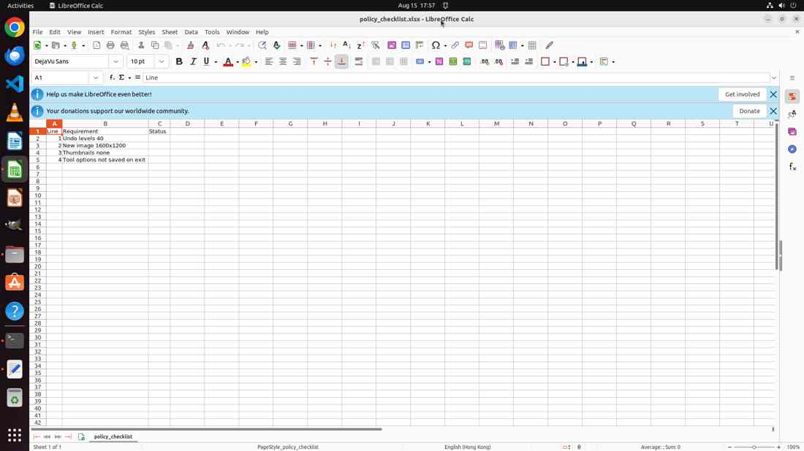
step 39 02:57:50
THINKINGNow LibreOffice Calc is in front, showing the checklist:
- Row 1 (header): A=Line, B=Requirement, C=Status
- Row 2: A=1, B=Undo levels 40, C=(empty)
- Row 3: A=2, B=New image 1600x1200, C=(empty)
- Row 4: A=3, B=Thumbnails none, C=(empty)
- Row 5: A=4, B=Tool options not saved on exit, C=(empty)
I need to put "DONE" in C2, C3, C4, C5.
Let me click on cell C2 first. The Name Box shows "A1". Let me use the Name Box to navigate to C2, or click on the cell directly.
Column C is at x≈253. Row 2 is at y≈219. Let me click on C2.
Actually, let me use the Name Box to be precise. Let me click on the Name Box and type C2. Or I can just click on the cell.
Let me click on cell C2 (x=253, y=219).
ACTIONLibreOffice Calc is now in front showing the checklist:
- Row 1: Line, Requirement, Status (headers)
- Row 2: 1, Undo levels 40
- Row 3: 2, New image 1600x1200
- Row 4: 3, Thumbnails none
- Row 5: 4, Tool options not saved on exit
I need to put "DONE" in the Status column (C) for rows 2-5. Let me click on cell C2 first.
TOOL CALL<tool_call>
<function=computer_use>
<parameter=action>
left_click
</parameter>
<parameter=coordinate>
[197, 302]
</parameter>
</function>
</tool_call>
EXECUTED (pyautogui in VM)pyautogui.click(378, 326)
step 40 02:58:13
THINKINGCell C2 is now selected (Name Box shows "C2"). Now let me type "DONE" and press Enter. Then I'll continue with C3, C4, C5.
Actually, a more efficient way: I can type "DONE" then Enter (moves to C3), type "DONE" then Enter (moves to C4), type "DONE" then Enter (moves to C5), type "DONE" then Enter. This will fill C2-C5.
Let me type "DONE" and press Enter for each. Let me start by typing DONE in C2.
Let me type "DONE".
ACTIONCell C2 is selected. Let me type "DONE" and press Enter to move to the next cell.
TOOL CALL<tool_call>
<function=computer_use>
<parameter=action>
type
</parameter>
<parameter=text>
DONE
</parameter>
</function>
</tool_call>
EXECUTED (pyautogui in VM)pyautogui.typewrite("DONE")

step 41 02:58:45
THINKINGHmm, it seems the "DONE" is being entered in C2 but the cell is still in edit mode. Looking at the screenshot:
- The Name Box shows "C2"
- The formula bar shows "DONE" with the green checkmark and red X (edit mode indicators)
- Cell C2 shows "DONE" (partially, "DONE" visible)
Wait, it seems the Enter/newline in my type command may not have been processed as a newline to confirm. The cell appears to be in edit mode still (the formula bar shows the edit indicators - the checkmark and X).
Actually, looking carefully, the cell C2 shows "DONE" and the cursor is still there. The formula bar shows "DONE" with edit mode controls (X and checkmark). This suggests the type put "DONE" but the newline might be interpreted as part of the cell or the cell is still in edit.
Hmm, actually the issue is that when I typed "DONE\n", the \n should have confirmed the entry and moved to C3. But the screenshot shows it's still in C2 edit mode with "DONE" in the formula bar.
Wait, maybe the screenshot was captured mid-action. Let me look again. The formula bar shows "DONE" and there are edit indicators. The cell C2 in the grid shows "DONE" (or "DONF"? hard to tell, looks like "DONE" with cursor).
Actually, I think what happened: the type action typed "DONE" and then the newline. But maybe the screenshot was taken before the Enter fully registered, OR the newline didn't work as expected.
Let me take a screenshot to see the current state clearly.
Actually, wait. Looking at the image: the formula bar has the red X and green checkmark icons, which indicate the cell is in EDIT mode. And C2 shows "DONE" with a text cursor after it. This means the Enter key did NOT confirm the edit - it's still in edit mode.
Hmm, that's odd. Maybe the "\n" in the type command was interpreted literally or not sent. Let me just press Enter/Return explicitly to confirm.
Wait, but if I press Enter now and it's in edit mode with "DONE", it will confirm and move to C3. Let me press Return.
Actually, let me reconsider. Maybe the type command's trailing newline is what's being processed. Let me take a screenshot first to see the true state.
ACTIONLet me take a screenshot to check the current state of the cell entry.
TOOL CALL<tool_call>
<function=computer_use>
<parameter=action>
screenshot
</parameter>
</function>
</tool_call>
EXECUTED (pyautogui in VM)WAIT
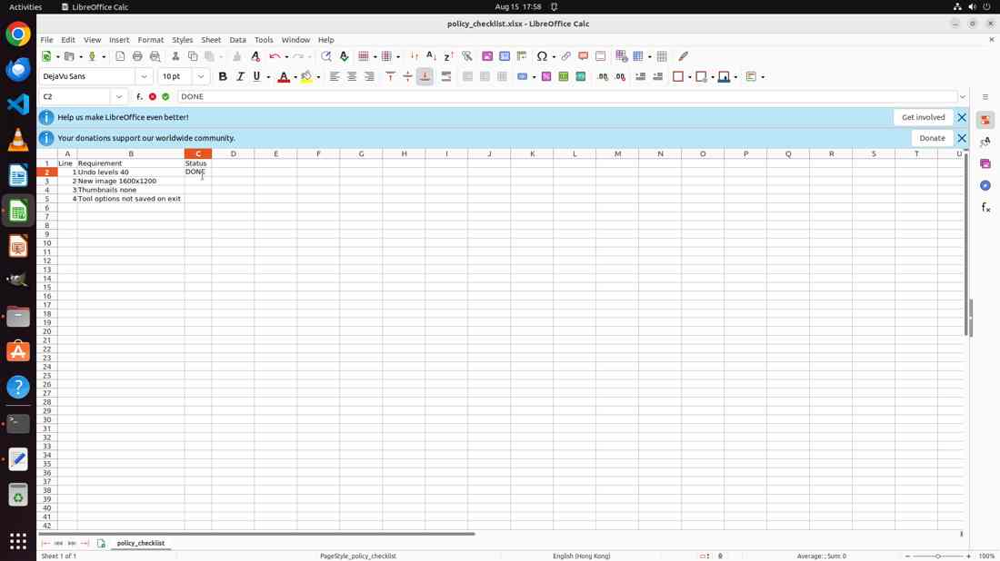
step 42 02:59:14
THINKINGThe cell C2 is still in edit mode. The formula bar shows "DONE" with the red X and green checkmark edit indicators. The cell C2 shows "DONE" (partially "DONF" due to cursor). So the newline in my type command didn't confirm the cell - it's still in edit mode.
This means the "\n" was either not sent or was treated as a literal newline within the cell (which would insert a line break, not confirm). Actually, in LibreOffice Calc, pressing Enter within a cell (in edit mode) confirms by default (unless "Press Enter to move selection" is off). But a literal newline character typed might insert a line break within the cell instead of confirming.
Hmm. Actually, when you type a newline via the "type" action, it likely sends a Return key. But it seems the cell is still in edit mode. Maybe the Return inserted a line break in the cell? No, that's not standard for typing.
Wait, actually the issue might be that the type action sent "DONE" and then a newline, but the newline might have been interpreted as starting a new line within the cell (Ctrl+Enter behavior) OR it just didn't register.
Let me just press Return explicitly to confirm the cell. If it's in edit mode with "DONE", pressing Return will confirm it and move to C3.
But wait - if the newline inserted a line break within the cell, then the cell content would be "DONE\n" (DONE with a trailing line break). That might not be ideal. Let me check. Actually, in the grid, C2 shows "DONE" on one line. If there were a trailing line break, it might show a taller cell or the text on first line. Hard to tell.
Let me just press Return to confirm and see what happens. Actually, to be safe, let me press Return. If the cell content is just "DONE", great. If it has a trailing newline, I'd need to fix it.
Actually, let me reconsider. The safest approach: press Escape to cancel this edit, then re-enter C2 cleanly by typing DONE and pressing Enter via the key action (not the type action's trailing newline).
Hmm, but that would cancel "DONE". Let me instead just press Return now. The current edit shows "DONE". Pressing Return confirms. Let me check if there's a hidden trailing newline by looking at the cell after.
Actually, you know what, let me just press Return and observe.
Wait, I'm worried the "type" with "\n" might have added a newline character into the cell content. In LibreOffice, when typing text in a cell, a newline character in the input stream... Actually the "type" action simulates keyboard input. A "\n" would be sent as a Return keypress. When you're in a cell and press Return, it confirms the cell entry and moves down. So it SHOULD have confirmed.
But the screenshot shows it's still in edit mode. This is confusing. Maybe the type action typed the characters including a Return, but the Return was consumed differently, OR the screenshot is stale.
Let me just press Return via the key action now to be sure.
Actually, let me reconsider. Perhaps the "type" action's newline was NOT interpreted as Return but the cell is genuinely still in edit mode showing "DONE". In that case, pressing Return will confirm. Let me do that.
Let me press Return.
ACTIONThe cell C2 is still in edit mode showing "DONE". The trailing newline didn't confirm it. Let me press Return to confirm the entry.
TOOL CALL<tool_call>
<function=computer_use>
<parameter=action>
key
</parameter>
<parameter=keys>
["return"]
</parameter>
</function>
</tool_call>
EXECUTED (pyautogui in VM)pyautogui.press("return")
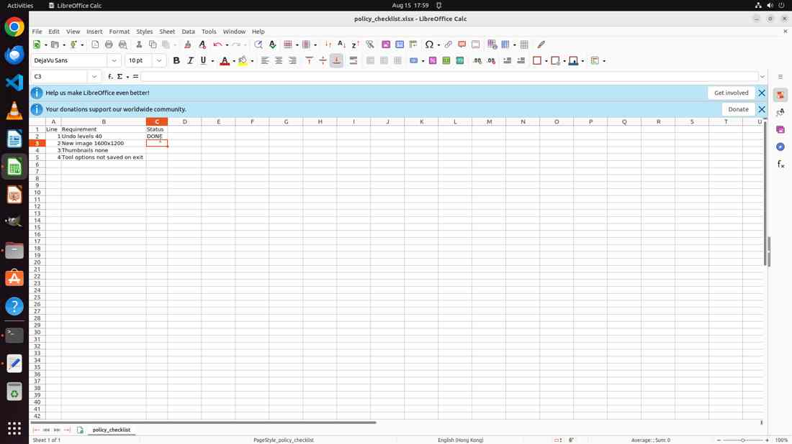
step 43 02:59:33
THINKINGNow C2 shows "DONE" (I can see "DONE" in cell C2, row 2). The selection has moved to C3 (Name Box shows "C3", and C3 is highlighted with the orange border). The formula bar is empty (C3 is empty).
Wait, I see C2 shows "DONF" - but that's just the rendering. It should be "DONE". Let me verify later. Actually, looking at row 2, column C, it shows "DONE" (the last char looks like it could be E but rendering is small).
Hmm, but wait - I'm concerned that the earlier "type DONE\n" might have left a trailing newline in C2, and then my Return confirmed it. If there was a trailing newline, C2 would contain "DONE\n" which when saved might show as "DONE" visually but have an embedded newline. Let me verify C2's content later by clicking on it and checking the formula bar.
Actually, let me reconsider. When I typed "DONE\n", if the \n was sent as Return, it would have confirmed immediately and I wouldn't have seen it still in edit mode. But I did see it in edit mode. So the \n was likely NOT sent as a confirm-Return but possibly inserted as a literal line-break character into the cell (Alt+Enter / in-cell newline), OR the type action just typed "DONE" and the \n did nothing visible.
Then I pressed Return which confirmed. So C2 might contain "DONE" possibly with a leading/trailing in-cell newline.
This is a concern. Let me verify C2's exact content. But first, let me continue filling C3, C4, C5 using the safer method: type "DONE" then press Return via key action (separately).
Actually, to avoid the in-cell newline issue entirely, let me use a cleaner method: type the text, then press Return as a separate key action.
Currently C3 is selected. Let me type "DONE" (without newline), then press Return.
Let me type "DONE" in C3.
ACTIONC2 now shows "DONE" and the selection moved to C3. Let me continue with C3. I'll type "DONE" (without a trailing newline this time to avoid issues).
TOOL CALL<tool_call>
<function=computer_use>
<parameter=action>
type
</parameter>
<parameter=text>
DONE
</parameter>
</function>
</tool_call>
EXECUTED (pyautogui in VM)pyautogui.typewrite("DONE")
step 44 02:59:45
THINKINGNow C3 shows "DONE" in edit mode (formula bar shows "DONE" with edit indicators). The cell C3 is in edit mode. Let me press Return to confirm and move to C4.
ACTIONC3 shows "DONE" in edit mode. Let me press Return to confirm and move to C4.
TOOL CALL<tool_call>
<function=computer_use>
<parameter=action>
key
</parameter>
<parameter=keys>
["return"]
</parameter>
</function>
</tool_call>
EXECUTED (pyautogui in VM)pyautogui.press("return")
step 45 02:59:57
THINKINGNow C2 and C3 both show "DONE". The selection moved to C4 (Name Box shows "C4", formula bar empty). Let me type "DONE" in C4.
ACTIONC2 and C3 both show "DONE". Now C4 is selected. Let me type "DONE" in C4.
TOOL CALL<tool_call>
<function=computer_use>
<parameter=action>
type
</parameter>
<parameter=text>
DONE
</parameter>
</function>
</tool_call>
EXECUTED (pyautogui in VM)pyautogui.typewrite("DONE")
step 46 03:00:11
THINKINGC4 now shows "DONE" in edit mode. Let me press Return to confirm and move to C5.
ACTIONC4 shows "DONE" in edit mode. Let me press Return to confirm and move to C5.
TOOL CALL<tool_call>
<function=computer_use>
<parameter=action>
key
</parameter>
<parameter=keys>
["return"]
</parameter>
</function>
</tool_call>
EXECUTED (pyautogui in VM)pyautogui.press("return")
step 47 03:00:25
THINKINGNow C2, C3, C4 all show "DONE". The selection moved to C5 (Name Box shows "C5", formula bar empty). Let me type "DONE" in C5.
ACTIONC2, C3, C4 all show "DONE". Now C5 is selected. Let me type "DONE" in C5.
TOOL CALL<tool_call>
<function=computer_use>
<parameter=action>
type
</parameter>
<parameter=text>
DONE
</parameter>
</function>
</tool_call>
EXECUTED (pyautogui in VM)pyautogui.typewrite("DONE")
step 48 03:00:39
THINKINGC5 now shows "DONE" in edit mode. Let me press Return to confirm the last entry.
ACTIONC5 shows "DONE" in edit mode. Let me press Return to confirm the final entry.
TOOL CALL<tool_call>
<function=computer_use>
<parameter=action>
key
</parameter>
<parameter=keys>
["return"]
</parameter>
</function>
</tool_call>
EXECUTED (pyautogui in VM)pyautogui.press("return")
step 49 03:00:54
THINKINGNow all 4 cells C2, C3, C4, C5 show "DONE". The selection moved to C6 (empty).
Let me verify C2's content to make sure there's no hidden trailing newline from my first entry. Let me click on C2 and check the formula bar. Actually, let me verify each cell. But visually they all show "DONE".
Let me click on C2 to check its content in the formula bar, to ensure it's exactly "DONE" without a trailing newline.
ACTIONAll 4 cells C2-C5 now show "DONE". Let me verify C2's exact content by clicking on it to check the formula bar (to ensure no hidden trailing newline from my first entry).
TOOL CALL<tool_call>
<function=computer_use>
<parameter=action>
left_click
</parameter>
<parameter=coordinate>
[197, 302]
</parameter>
</function>
</tool_call>
EXECUTED (pyautogui in VM)pyautogui.click(378, 326)
step 50 03:01:13
THINKINGC2 is selected and the formula bar shows exactly "DONE" (no trailing newline visible). Good. The cell content is clean "DONE".
Now let me verify the cell doesn't have a hidden newline. The formula bar shows "DONE" with a single line. If there were a trailing newline, the formula bar might show a cursor position after a line break, but it looks clean. Let me trust it's "DONE".
Actually, to be thorough, I could check the content length. But it looks fine. The formula bar shows "DONE".
Now all 4 policy lines are marked DONE:
- C2: DONE (Undo levels 40)
- C3: DONE (New image 1600x1200)
- C4: DONE (Thumbnails none)
- C5: DONE (Tool options not saved on exit)
Now I need to save the checklist file so the changes persist. Let me press Ctrl+S. Since it's an xlsx file, LibreOffice will prompt to keep the format (xlsx) or convert to ODF. I'll choose to keep xlsx format.
Let me press Ctrl+S.
ACTIONC2's formula bar shows exactly "DONE" with no trailing newline. All 4 policy lines are now marked DONE in the Status column. Now I need to save the file. Let me press Ctrl+S.
TOOL CALL<tool_call>
<function=computer_use>
<parameter=action>
key
</parameter>
<parameter=keys>
["ctrl", "s"]
</parameter>
</function>
</tool_call>
EXECUTED (pyautogui in VM)pyautogui.hotkey("ctrl", "s")
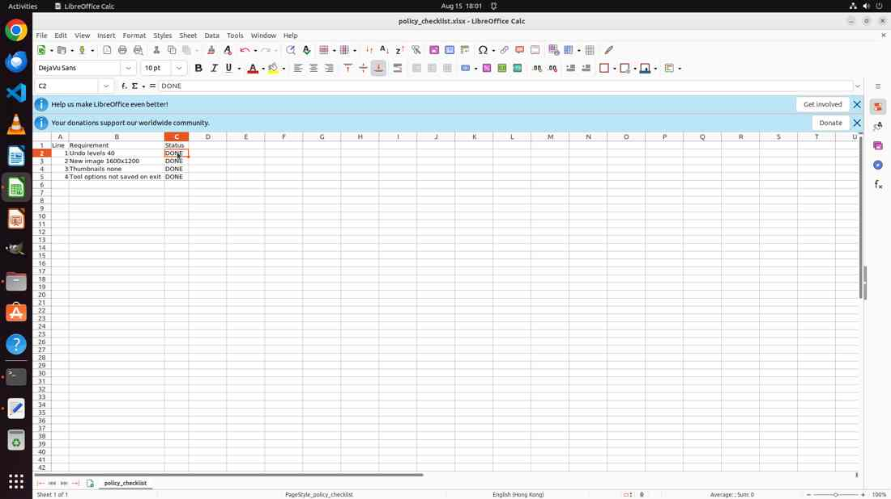